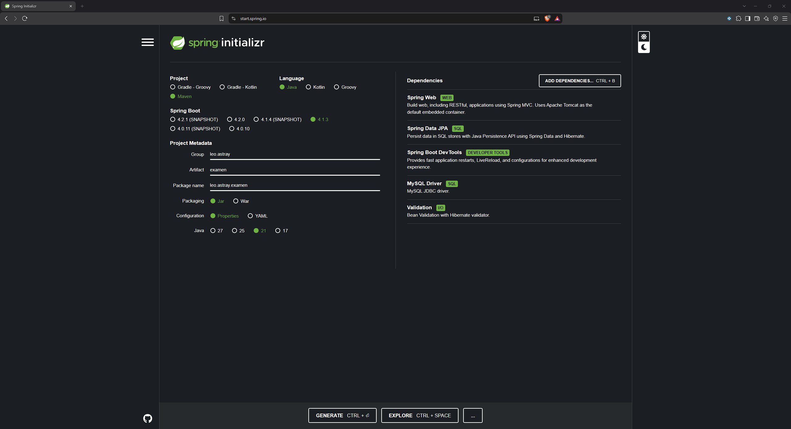

Crear el proyecto en Spring Initializr
1. Abre el navegador y escribe
https://start.spring.io.
2. En Project, marca Maven. Maven es quien lee la lista de piezas del proyecto y descarga las bibliotecas necesarias.
3. En Language, marca Java.
4. En Spring Boot, elige 4.1.3.
5. Completa con los datos de la tabla:
| Campo | Escribe | Para qué sirve |
|---|---|---|
| Group | leo.astray | Identifica el grupo o autor del proyecto. |
| Artifact | examen | Da nombre al proyecto y al archivo que se construirá. |
| Package name | leo.astray.examen | La dirección común de nuestras clases. |
| Packaging | Jar | Un paquete ejecutable de Java. |
| Java | 21 | Versión con la que vas a programar. |
| Configuration | Properties | Crea application.properties, si aparece esta opción. |
6. Pulsa Add Dependencies. Busca y añade, una por una, Spring Data JPA, MySQL Driver, Spring Boot DevTools, Spring Web y Validation.
7. JPA permite relacionar objetos con tablas; Spring Data aporta los repositorios; Hibernate realiza
el trabajo de persistencia. MySQL Driver es el «traductor» que permite a Java hablar con MySQL. DevTools ayuda
con los reinicios durante el desarrollo. Spring Web y Validation no se usan hasta la Parte 2 (la API REST), pero
conviene añadirlas ya: así no hay que tocar el pom.xml más adelante.
8. Pulsa Generate. Se descargará un ZIP. Guardalo en la carpeta donde quieras tener el proyecto.

Abrir el proyecto en VS Code
1. Ve a la carpeta donde hayas dejado el zip que se descargó. Clic derecho sobre el ZIP, Extraer todo. No trabajes dentro del ZIP.
2. Abre VS Code. En File > Open Folder > Abrir carpeta, selecciona la carpeta que has extraido.
3. Acepta la importación del proyecto Maven cuando se solicite y espera a que termine de descargar dependencias. La primera vez necesitas conexión a Internet.
Entender las carpetas que ya existen
pom.xml: la lista de dependencias y las reglas de construcción. Aquí añadimos dependencias si las necesitamos.src/main/java: aquí va tu código Java.src/main/resources: aquí van la configuración y los datos SQL de inicio.ExamenApplication.java: clase de arranque. Su métodomainpone en marcha Spring.
Piensa en una mochila: las carpetas separan los cuadernos; pom.xml es la lista del material y la
clase principal es el botón de encendido.
Configurar la conexión y las tablas
1. En el explorador de VS Code, despliega src > main > resources.
2. Haz clic en application.properties.
3. Escribe este contenido. Sustituye usuario, contraseña y puerto por los de tu MySQL.
spring.application.name=examen server.port=8080 spring.datasource.url=jdbc:mysql://localhost:3308/examen?createDatabaseIfNotExist=true spring.datasource.username=root spring.datasource.password= spring.datasource.driver-class-name=com.mysql.cj.jdbc.Driver spring.jpa.hibernate.ddl-auto=update spring.jpa.show-sql=true spring.jpa.properties.hibernate.dialect=org.hibernate.dialect.MySQLDialect spring.jpa.database-platform=org.hibernate.dialect.MySQLDialect spring.sql.init.mode=always spring.jpa.defer-datasource-initialization=true spring.jpa.properties.hibernate.format_sql=true
4. Guarda con Ctrl+S.
Es importante mencionar que en la linea de spring.application.name=examen se tiene que cambiar examen por el
nombre que hayamos puesto en Artifact al crear el proyecto en start.spring.io. En la URL,
jdbc:mysql indica el tipo de conexión; localhost, tu ordenador;
3308, el puerto del servidor; y examen, el archivador que abrimos.
show-sql enseña las consultas en la terminal y format_sql las distribuye para leerlas
mejor. ddl-auto indica qué hará Hibernate con la estructura. Los valores que puede tener ddl-auto
son los siguientes, en este tutorial vamos a usar o create-drop o update:
| Valor | Qué ocurre |
|---|---|
| update | Intenta ajustar las tablas al modelo. Útil al practicar; no resuelve todas las migraciones. |
| create | Recrea las tablas gestionadas al arrancar y se pierden sus datos anteriores. |
| create-drop | Recrea al arrancar y elimina las tablas al cerrar normalmente. |
| validate | Comprueba que las tablas encajan con las entidades; no las crea. |
| none | No pide a Hibernate crear ni modificar el esquema. |
Al principio dejamos update. En el paso 3A (el de debajo de este) añadimos el servidor web para mantener la aplicación abierta. En el paso 14 cambiaremos la configuración de la base de práctica para cargar un juego de datos repetible con create-drop.
Añadir el servidor web y mantener la aplicación abierta
El servidor web de Spring Boot permite que la aplicación siga arrancada después de terminar las instrucciones de run. Así puedes abrir phpMyAdmin y examinar las tablas mientras el programa sigue funcionando. Con create-drop, las tablas se mantienen durante la ejecución y se eliminan al cerrar normalmente la aplicación.
Crear los paquetes y distinguir los tipos Java
1. Despliega src/main/java/leo/astray/examen.
2. Clic derecho sobre la carpeta de examen y elige New Java Package. Escribe
model y pulsa Intro. Dentro de model ahora repite y crea entity, enums y
repository.
leo/astray/examen/
ExamenApplication.java
model/
entity/ Jugador.java...
enums/ Posicion.java...
repository/ IJugadorRepository.java...
Un paquete organiza y da una dirección a las clases. En este ejemplo, la dirección de Jugador será leo.astray.examen.model.entity.Jugador. Entity contiene las entidades que representan datos de tablas y repository contiene las interfaces de acceso a esos datos, no palabras obligatorias de Java.
Porque elegir Class Interface o Enum
| Tipo | Idea sencilla | Uso en el proyecto |
|---|---|---|
| class | Un molde para fabricar objetos con datos y acciones. | Jugador, Equipo, Fichaje... |
| interface | Un contrato de operaciones que alguien debe ofrecer. | El repositorio promete buscar y guardar. |
| enum | Una lista cerrada de opciones permitidas. | Posicion, ponemos un listado de valores permitidos en precisamente ese campo. |
Para crear cada uno, haz clic derecho sobre la carpeta > New Java File > escogemos class/enum/interface.
Crear el enum Posicion
1. Clic derecho en enums > New Java File > Enum y escribe
Posicion.
2. Sustituye el contenido por este código completo y guarda.
package leo.astray.examen.enums;
public enum Posicion {
PORTERO, DEFENSA, CENTROCAMPISTA, DELANTERO
}
Posicion.PORTERO, no el texto libre "portero".
En SQL emplearemos el nombre exacto, por ejemplo 'PORTERO'.public permite utilizar este tipo desde los demás paquetes. Las llaves agrupan su contenido. El
nombre público Posicion coincide exactamente con el archivo Posicion.java, incluidas
las mayúsculas.
Crear la entidad Jugador
1. Clic derecho en entity > New Java File > Class y escribe Jugador.
2. Pega este archivo completo. Las anotaciones empiezan por @: son etiquetas que explican a JPA cómo guardar la clase.
package leo.astray.examen.entity;
import leo.astray.examen.enums.Posicion;
import jakarta.persistence.*;
@Entity
@Table(name = "jugadores")
public class Jugador {
@Id
@GeneratedValue(strategy = GenerationType.IDENTITY)
@Column(name = "id_jugador")
private Long id;
@Column(nullable = false, length = 100)
private String nombre;
@Column(nullable = false, unique = true, length = 50)
private String mote;
@Enumerated(EnumType.STRING)
@Column(nullable = false, length = 20)
private Posicion posicion;
public Jugador() {}
public Jugador(String nombre, String mote, Posicion posicion) {
this.nombre = nombre;
this.mote = mote;
this.posicion = posicion;
}
public Long getId() { return id; }
public String getNombre() { return nombre; }
public String getMote() { return mote; }
public Posicion getPosicion() { return posicion; }
public void setNombre(String nombre) { this.nombre = nombre; }
public void setMote(String mote) { this.mote = mote; }
public void setPosicion(Posicion posicion) {
this.posicion = posicion;
}
}
Una entidad es una clase que JPA sabe relacionar con la base. Normalmente cada objeto guardado (nombre, mote, posicion...) corresponde a una fila de su tabla.
@Entity marca la entidad. @Table fija el nombre SQL. @Id señala la clave primaria, el número que identifica una fila sin confundirla con otra. IDENTITY deja que MySQL genere ese número al insertar. El objeto nuevo tiene id = null hasta que se guarda; no le inventes un identificador para una inserción normal.
Long es un tipo numérico que también admite null. String guarda texto. private protege los campos para acceder a ellos mediante métodos. @Column(nullable=false) prohíbe SQL NULL; no impide por sí sola una cadena vacía. unique=true impide repetir el mote y length fija la longitud de la columna al generar el esquema.
@Enumerated(EnumType.STRING) guarda DELANTERO como texto. Guardar una posición por número sería más frágil si luego cambias el orden de los valores del enum.
Los constructores se llaman como la clase y no tienen tipo de retorno. El vacío permite a JPA crear el objeto al leerlo; el otro permite rellenarlo al fabricarlo tú. this.nombre es el campo del objeto y nombre es el dato recibido. Los getters devuelven información; los setters la cambian. return entrega un resultado y void significa que el método no devuelve uno.
Para generar Getters y Setters en VS Code: coloca el cursor dentro de la clase, clic derecho > Source Action > Generate Getters and Setters, selecciona los campos y acepta. Para constructores, Source Action > Generate Constructors.
Ctrl+Shift+M abre Problems. No deben quedar errores rojos. jakarta.persistence es el paquete usado aquí; no aceptes un import antiguo javax.persistence. Un import indica la dirección de un tipo de otro paquete, no crea otra copia del archivo.Crear la interfaz del repositorio
1. Clic derecho en repository > New Java File > Interface. Escribe IJugadorRepository. Si solo hay New File, crea IJugadorRepository.java y escribe public interface, como abajo.
2. Pega el archivo completo y guarda.
package leo.astray.examen.repository;
import leo.astray.examen.entity.Jugador;
import org.springframework.data.jpa.repository.JpaRepository;
public interface IJugadorRepository
extends JpaRepository<Jugador, Long> {
}
extends permite heredar el contrato de JpaRepository. Los dos tipos entre < > dicen «este repositorio trabaja con Jugador y sus identificadores son Long». Si la entidad usa Integer, el segundo tipo debe ser Integer, y las llamadas usarían 1 en vez de 1L.
JpaRepository ya trae métodos predefinidos, no tenemos que implementarlos manualmente. Algunos son los siguientes:
| Método que ya tienes | Para qué lo usas |
|---|---|
save(objeto) | Insertar o guardar los cambios de una entidad. |
findById(id) | Buscar por clave primaria; devuelve Optional. |
findAll() | Obtener todos los registros en una lista. |
existsById(id) | Saber si existe sin pedir toda la entidad. |
count() | Contar las filas. |
deleteById(id) | Borrar por identificador, respetando las relaciones. |
Ejecutar la primera prueba desde ExamenApplication
1. Abre ExamenApplication.java. Está en src/main/java/leo/astray/examen/ExamenApplication.java. Es el archivo que Spring Initializr creó para arrancar el proyecto.
2. Sustituye su contenido por este código completo:
package leo.astray.examen;
import leo.astray.examen.entity.Jugador;
import leo.astray.examen.enums.Posicion;
import leo.astray.examen.repository.IJugadorRepository;
import org.springframework.beans.factory.annotation.Autowired;
import org.springframework.boot.CommandLineRunner;
import org.springframework.boot.SpringApplication;
import org.springframework.boot.autoconfigure.SpringBootApplication;
@SpringBootApplication
public class ExamenApplication implements CommandLineRunner {
@Autowired
private IJugadorRepository jugadorRepository;
public static void main(String[] args) {
SpringApplication.run(ExamenApplication.class, args);
}
@Override
public void run(String... args) {
if (jugadorRepository.count() == 0) {
Jugador jugador1 = new Jugador
("Lionel Messi","La Pulga",Posicion.DELANTERO);
jugadorRepository.save(jugador1);
System.out.println("ID creado: " + jugador1.getId());
}
System.out.println("Total: " + jugadorRepository.count());
for (Jugador jugador : jugadorRepository.findAll()) {
System.out.println(jugador.getNombre());
}
}
}
3. Entiende qué hace cada parte.
@SpringBootApplication: marca la clase que arranca y configura la aplicación. Ya venía en el archivo generado.implements CommandLineRunner: permite que esta misma clase tenga un métodorunque Spring ejecutará al terminar de preparar la aplicación y la conexión con la base de datos.@Autowired: le pide a Spring que coloque enjugadorRepositoryel repositorio preparado para trabajar con los jugadores.main: arranca Spring. Conservamos este método.run: contiene las operaciones que queremos probar después del arranque. Aquí escribiremos los ejercicios.@Override: indica que estamos escribiendo el métodorunexigido porCommandLineRunner.
Dentro de run:
| Instrucción | Qué hace |
|---|---|
if (jugadorRepository.count() == 0) | Comprueba si la tabla está vacía. Si está vacía, crea a Lionel Messi. Así evitamos intentar guardar otra vez el mismo mote al reiniciar esta primera prueba. |
Jugador jugador1 = new Jugador(...); | Crea el objeto en la memoria del programa. |
jugadorRepository.save(jugador1); | Lo guarda en MySQL. Crear el objeto con new no basta para guardarlo. |
for (Jugador jugador : jugadorRepository.findAll()) | Recupera todos los jugadores y los recorre uno a uno para imprimir sus nombres. |
4. Guarda todos los archivos. Pulsa File > Save All o Archivo > Guardar todo.
5. Ejecuta el proyecto.
6. Comprueba el resultado. Si la tabla estaba vacía, aparecerá algo parecido a:
ID creado: 1 Total: 1 Lionel Messi
El ID puede ser diferente de 1. Si ya había jugadores, mostrará la cantidad y los nombres existentes. Además ten en cuenta que hemos puesto en application.properties que nos enseñe el sql de cada consulta entonces va a aparecer el código SQL generado entre los resultados.
examen > jugadores > Examinar. Con ddl-auto=update, los datos permanecen al detener la aplicación. Con el servidor web añadido, la aplicación seguirá en marcha hasta que la detengas con Ctrl+C o dando clic en el botón de parar.Practicar buscar, cambiar y borrar desde ExamenApplication
1. Abre ExamenApplication.java. Utilizaremos el mismo método run del paso anterior. Añade este import junto a los demás, antes de @SpringBootApplication:
import java.util.Optional;
2. Busca un jugador y cambia su nombre. Dentro de run, localiza el listado del paso anterior:
for (Jugador jugador : jugadorRepository.findAll()) {
System.out.println(jugador.getNombre());
}
Después de la llave que cierra ese for, pega lo siguiente. El código debe seguir dentro de las llaves de run:
Optional<Jugador> resultado = jugadorRepository.findById(1L);
if (resultado.isPresent()) {
Jugador jugador = resultado.get();
jugador.setNombre("Ana García");
jugadorRepository.save(jugador);
System.out.println(
"Nombre cambiado: " + jugador.getNombre()
);
} else {
System.out.println("No existe ese jugador");
}
1L por 5L.Qué hace cada línea:
jugadorRepository.findById(1L): busca en la base de datos al jugador con ID 1.Optional<Jugador>: es una caja que puede contener al jugador encontrado o estar vacía.resultado.isPresent(): comprueba si la caja contiene un jugador.resultado.get(): saca el jugador de la caja. Lo utilizamos después de comprobar que existe.jugador.setNombre(...): cambia el nombre en el objeto Java.jugadorRepository.save(jugador): guarda ese cambio en MySQL.
Estamos modificando un jugador que ya tenía identificador, así que guardamos los cambios de ese registro.
3. Guarda y comprueba la modificación. Guarda los archivos y ejecuta el proyecto. Si el jugador existe, aparecerá:
Nombre cambiado: Ana García
examen > jugadores > Examinar. Actualiza la página y comprueba el nombre.4. Prueba el borrado con un jugador temporal. Debajo del bloque anterior, todavía dentro de run, añade:
Jugador temporal = new Jugador(
"Temporal",
"PruebaUnica",
Posicion.PORTERO
);
jugadorRepository.save(temporal);
Long idTemporal = temporal.getId();
System.out.println(
"ID del jugador temporal: " + idTemporal
);
jugadorRepository.deleteById(idTemporal);
System.out.println(
"¿Sigue existiendo? " + jugadorRepository.existsById(idTemporal)
);
Este bloque hace lo siguiente:
- Crea un jugador temporal en memoria.
- Lo guarda en MySQL.
- Obtiene el identificador que MySQL le ha asignado.
- Borra ese jugador usando su identificador.
- Comprueba si sigue existiendo.
Guarda y vuelve a ejecutar. El resultado esperado del último mensaje es:
¿Sigue existiendo? false
false significa que el jugador temporal ya no existe. Como lo creamos y borramos durante la misma ejecución, al revisar después la tabla en phpMyAdmin no aparecerá.
findById devuelve un Optional<Jugador> porque puede no encontrar nada; findAll devuelve una List<Jugador> porque puede encontrar varios. El sufijo L de 1L indica que ese número es de tipo long.Escribir consultas en la interfaz
1. Abre IJugadorRepository.java. Dentro de esta interfaz escribimos las búsquedas que necesitamos. Para estas consultas, Spring Data prepara el código que consulta MySQL a partir del nombre del método. Deja el archivo así, manteniendo el paquete de tu proyecto:
package leo.astray.examen.repository;
import java.util.List;
import org.springframework.data.jpa.repository.JpaRepository;
import leo.astray.examen.entity.Jugador;
import leo.astray.examen.enums.Posicion;
public interface IJugadorRepository
extends JpaRepository<Jugador, Long> {
Jugador findByMote(String mote);
List<Jugador> findByPosicionAndNombre(
Posicion posicion, String nombre
);
}
2. Entiende la primera consulta: buscar por mote.
Jugador findByMote(String mote);
Jugador: devuelve un jugador.findByMote: significa «buscar por el campomote».String mote: es el texto que recibirá para buscar.;: termina la declaración. Aquí no escribimos el código de la búsqueda.
Como el mote es único, no debería haber dos jugadores con el mismo mote. Si no encuentra ninguno, este método devuelve null.
3. Prueba esa consulta en ExamenApplication.java. Dentro de run, añade:
Jugador encontrado = jugadorRepository.findByMote("Rayo");
if (encontrado != null) {
System.out.println(encontrado.getNombre());
} else {
System.out.println("No existe ningún jugador con ese mote");
}
encontrado != null comprueba que hemos encontrado un jugador antes de pedirle su nombre.
4. Entiende la segunda consulta: buscar por posición y nombre.
List<Jugador> findByPosicionAndNombre(
Posicion posicion, String nombre
);
And significa y: deben cumplirse las dos condiciones. Aquí utilizamos List<Jugador> porque puede haber varios jugadores con el mismo nombre y posición. Es simplemente una lista de resultados.
5. Pruébala también dentro de run.
for (Jugador jugador :
jugadorRepository.findByPosicionAndNombre(
Posicion.DELANTERO, "Ana García")) {
System.out.println(jugador.getNombre());
System.out.println(jugador.getMote());
}
El for muestra los jugadores encontrados, uno a uno. Si no hay coincidencias, no entra en el bucle. Escribe el nombre exactamente como lo tengas guardado.
6. Guarda y ejecuta.
findByMote busca por mote y findByPosicionAndNombre busca por posicion y nombre.Con estas dos consultas puedes entender el mecanismo. Añade las demás cuando el ejercicio las pida. Si un enunciado exige expresamente Optional<Jugador>, tendrás que respetar ese requisito.
Añadir una relación uno a uno
Una relación uno a uno conecta un objeto con otro.
Preparar la clase principal
1. Abre ExamenApplication.java en src/main/java/leo/astray/examen.
2. Borra solamente las instrucciones de las pruebas anteriores que están dentro de las llaves de run. Conserva main, @SpringBootApplication, implements CommandLineRunner, los campos con @Autowired y el propio método run.
3. Deja temporalmente esta instrucción dentro de run:
System.out.println("Preparando las relaciones");
Crear la entidad del perfil
4. En el explorador de VS Code, busca el paquete entity. Haz clic derecho sobre él → New Java File → Class. Escribe PerfilEstadistico. VS Code crea PerfilEstadistico.java.
5. Sustituye el contenido del archivo por este código completo:
package leo.astray.examen.entity;
import jakarta.persistence.*;
@Entity
@Table(name = "perfiles_estadisticos")
public class PerfilEstadistico {
@Id
@GeneratedValue(strategy = GenerationType.IDENTITY)
@Column(name = "id_perfil")
private Long id;
@Column(nullable = false)
private int partidos;
@Column(nullable = false)
private int goles;
@Column(nullable = false)
private int asistencias;
@Column(nullable = false)
private double valoracion;
public PerfilEstadistico() {}
public PerfilEstadistico(int partidos, int goles,
int asistencias, double valoracion) {
this.partidos = partidos;
this.goles = goles;
this.asistencias = asistencias;
this.valoracion = valoracion;
}
public Long getId() { return id; }
public int getPartidos() { return partidos; }
public int getGoles() { return goles; }
public int getAsistencias() { return asistencias; }
public double getValoracion() { return valoracion; }
}
Conectar el jugador con su perfil
6. Abre Jugador.java. Añade este campo junto a sus otros atributos, dentro de la clase y fuera de cualquier método:
@OneToOne(cascade = CascadeType.ALL, optional = false) @JoinColumn(name = "id_perfil", nullable = false, unique = true) private PerfilEstadistico perfil;
7. Añade estos métodos (getters y setters) dentro de la clase, junto a sus otros getters y setters, puedes usar el generate getters and setters que mencionamos en pasos anteriores:
public PerfilEstadistico getPerfil() {
return perfil;
}
public void setPerfil(PerfilEstadistico perfil) {
this.perfil = perfil;
}
8. Cambia el constructor de Jugador. Sustituye el de 3 parámetros del paso 6 por este de 4, que añade el perfil. Conserva también el constructor vacío public Jugador() {}:
public Jugador(String nombre, String mote,
Posicion posicion, PerfilEstadistico perfil) {
this.nombre = nombre;
this.mote = mote;
this.posicion = posicion;
this.perfil = perfil;
}
Si prefieres generarlo con VS Code: borra el de 3 parámetros, clic derecho dentro de la clase > Source Action > Generate Constructors y marca solo nombre, mote, posicion y perfil. No marques id (lo pone MySQL).
Jugador sin él, y el error aparece en rojo en VS Code, no al ejecutar y guardar. Por eso solo dejamos una forma de crear un jugador: new Jugador(nombre, mote, posicion, perfil). El constructor vacío se queda porque JPA lo necesita para crear los objetos al leer filas de la base; tú no lo uses. Las pruebas antiguas del paso 9 que usaban 3 parámetros ya no compilan, y por eso el paso 2 pedía vaciar run.Qué significa cada parte: @OneToOne declara la relación. @JoinColumn crea en jugadores la columna id_perfil, que guarda el número de una fila de perfiles_estadisticos. Ese número es una clave foránea: una referencia a otra tabla, como apuntar el número de la ficha en la tarjeta del jugador.
nullable = false obliga a indicar un perfil. unique = true impide que dos jugadores compartan el mismo. optional = false expresa también en el modelo Java que la relación es obligatoria.
El propietario de la relación es el lado que controla la columna de unión; aquí es Jugador. cascade = CascadeType.ALL propaga las operaciones JPA al perfil: al guardar un jugador nuevo se guarda su perfil y al borrar ese jugador también se borra su perfil. Tiene sentido porque esa ficha pertenece a ese jugador.
Cómo se guardará desde Java
Este bloque es un ejemplo para poner dentro de run, cuando hayas terminado el modelo y cargado los datos del paso 14. No lo añadas todavía a la prueba final:
PerfilEstadistico perfil = new PerfilEstadistico(
10, 2, 1, 7.5);
Jugador jugador = new Jugador(
"Leo", "Flecha", Posicion.DEFENSA, perfil);
jugadorRepository.save(jugador);
Primero preparas la ficha; después fabricas el jugador pasándosela en el constructor, y por último lo guardas. Al guardar el jugador, la cascada guarda también la ficha. El orden importa: el perfil tiene que existir antes que el jugador, porque el constructor lo pide.
Si un ejercicio pide navegar también desde el perfil hasta su jugador, el lado inverso llevaría @OneToOne(mappedBy = "perfil"). perfil es el nombre del atributo de Jugador. Para nuestro ejemplo basta con poder ir de jugador a perfil.
Crear una relación uno a muchos
Una relación uno a muchos significa que un objeto puede tener varios del otro tipo. En este ejercicio un equipo puede tener varios estadios, pero cada estadio pertenece a un solo equipo.
Primero veremos la relación en una dirección y después la convertiremos en dos direcciones. Son dos versiones de la misma relación; al final conservaremos la bidireccional.
Crear Estadio
1. Clic derecho en entity → New Java File → Class. Escribe Estadio y pega el archivo completo:
package leo.astray.examen.entity;
import jakarta.persistence.*;
@Entity
@Table(name = "estadios")
public class Estadio {
@Id
@GeneratedValue(strategy = GenerationType.IDENTITY)
@Column(name = "id_estadio")
private Long id;
@Column(nullable = false, length = 100)
private String nombre;
@Column(nullable = false)
private int capacidad;
public Estadio() {}
public Estadio(String nombre, int capacidad) {
this.nombre = nombre;
this.capacidad = capacidad;
}
public Long getId() { return id; }
public String getNombre() { return nombre; }
public int getCapacidad() { return capacidad; }
}
Crear Equipo con una lista de estadios
2. Crea Equipo.java de la misma manera y pega este código completo:
package leo.astray.examen.entity;
import jakarta.persistence.*;
import java.math.BigDecimal;
import java.util.ArrayList;
import java.util.List;
@Entity
@Table(name = "equipos")
public class Equipo {
@Id
@GeneratedValue(strategy = GenerationType.IDENTITY)
@Column(name = "id_equipo")
private Long id;
@Column(nullable = false, length = 100)
private String nombre;
@Column(nullable = false, length = 100)
private String ciudad;
@Column(nullable = false, precision = 14, scale = 2)
private BigDecimal presupuesto;
@OneToMany(cascade = CascadeType.ALL, orphanRemoval = true)
@JoinColumn(name = "id_equipo")
private List<Estadio> estadios = new ArrayList<>();
public Equipo() {}
public Equipo(String nombre, String ciudad,
BigDecimal presupuesto) {
this.nombre = nombre;
this.ciudad = ciudad;
this.presupuesto = presupuesto;
}
public Long getId() { return id; }
public String getNombre() { return nombre; }
public String getCiudad() { return ciudad; }
public BigDecimal getPresupuesto() { return presupuesto; }
public List<Estadio> getEstadios() { return estadios; }
public void addEstadio(Estadio estadio) {
estadios.add(estadio);
}
}
List<Estadio> es la lista de estadios de ese equipo. Aquí necesitamos una colección porque puede haber varios. new ArrayList<>() prepara una lista vacía donde poder añadirlos; si no la creas, podrías tener null y no podrías usar add.
BigDecimal sirve para representar importes decimales exactos. Para dinero escribe, por ejemplo, new BigDecimal("100000.00"). precision = 14, scale = 2 permite 14 cifras en total, 2 de ellas decimales.
Equipo a sus estadios, pero Estadio no tiene un campo para volver al equipo. Por eso se llama unidireccional. Aunque @JoinColumn esté escrito en Equipo, en este mapeo la columna id_equipo está en la tabla estadios.Convertirla en bidireccional
3. Abre Estadio.java. Añade este atributo dentro de la clase, después de los otros campos, y los métodos junto a sus getters:
@ManyToOne(fetch = FetchType.LAZY, optional = false)
@JoinColumn(name = "id_equipo", nullable = false)
private Equipo equipo;
public Equipo getEquipo() {
return equipo;
}
public void setEquipo(Equipo equipo) {
this.equipo = equipo;
}
Desde el punto de vista de un estadio, muchos estadios pueden apuntar al mismo equipo: por eso aquí escribimos @ManyToOne.
4. Vuelve a Equipo.java. Sustituye las dos anotaciones de la lista estadios por esta. Conserva una sola lista y elimina la antigua @JoinColumn de ese campo:
@OneToMany(mappedBy = "equipo", cascade = CascadeType.ALL,
orphanRemoval = true)
private List<Estadio> estadios = new ArrayList<>();
Ahora puedes ir de equipo a estadios y de estadio a equipo: es bidireccional. En la base sigue habiendo una sola columna estadios.id_equipo. mappedBy = "equipo" señala el campo Java equipo de Estadio; no se escribe id_equipo porque ese es el nombre SQL.
orphanRemoval = true significa que quitar un estadio de esta relación puede borrar su fila al sincronizar los cambios con la base. Úsalo cuando el hijo deba desaparecer al separarlo del padre. cascade = ALL incluye borrar los estadios al borrar su equipo; no es lo mismo que quitar un elemento de la lista.
Un ejemplo de creación, para usar dentro de run si el ejercicio lo pide, sería:
Equipo equipo = new Equipo(
"Estrellas", "Madrid", new BigDecimal("100000.00"));
Estadio estadio = new Estadio("Campo Norte", 5000);
equipo.addEstadio(estadio);
equipoRepository.save(equipo);
Este ejemplo explica la operación; no lo copies además de los datos iniciales del paso 14. Allí se crearán ya esos registros con SQL. Para usarlo necesitarías importar java.math.BigDecimal en la clase principal y tener el repositorio de equipos que crearemos en ese paso.
Representar una relación muchos a muchos
Una relación muchos a muchos permite que varios objetos de un tipo se relacionen con varios del otro. Un jugador puede pasar por distintos equipos a lo largo de su carrera y cada equipo puede tener muchos jugadores.
Hay dos formas según lo que pida el examen. Si solo necesitas unir jugador y equipo, sirve @ManyToMany. Si además debes guardar precio, temporada o tipo de operación, crea Fichaje.
Opción A: cuando solo interesa la unión
La base necesita una tabla intermedia con un ID de jugador y un ID de equipo. En Jugador el mapeo podría ser:
@ManyToMany
@JoinTable(name = "jugadores_equipos",
joinColumns = @JoinColumn(name = "id_jugador"),
inverseJoinColumns = @JoinColumn(name = "id_equipo"))
private Set<Equipo> equipos = new HashSet<>();
public Set<Equipo> getEquipos() {
return equipos;
}
public void addEquipo(Equipo equipo) {
equipos.add(equipo);
equipo.getJugadores().add(this);
}
En Equipo, el otro lado sería:
@ManyToMany(mappedBy = "equipos")
private Set<Jugador> jugadores = new HashSet<>();
public Set<Jugador> getJugadores() {
return jugadores;
}
Ambos archivos necesitarían import java.util.Set; e import java.util.HashSet;. Un Set es una colección que evita elementos repetidos según la igualdad de los objetos Java. Aquí lo usamos para representar una pertenencia sin repetir el mismo objeto.
@JoinTable da nombre a la tabla intermedia. joinColumns corresponde al propietario, aquí el jugador; inverseJoinColumns, al equipo. mappedBy = "equipos" apunta al atributo de Jugador.
Opción B: crear Fichaje con sus propios datos
1. Para seguir el tutorial, conserva Jugador, Equipo, Estadio y PerfilEstadistico de los pasos anteriores. Si habías copiado la opción A, quita sus campos equipos y jugadores, las anotaciones y los métodos que dependen de ellos. No mantengas las dos formas para el mismo historial.
2. Clic derecho en enums → New Java File → Enum. Crea PeriodoMercado y pega:
package leo.astray.examen.enums;
public enum PeriodoMercado {
VERANO,
INVIERNO
}
3. Crea del mismo modo TipoOperacion:
package leo.astray.examen.enums;
public enum TipoOperacion {
TRASPASO,
CESION,
LIBRE
}
VERANO o INVIERNO, pero no inventarte un texto distinto por error.Los archivos también terminan en .java; la palabra enum indica qué estás creando.
4. Clic derecho en entity → New Java File → Class. Crea Fichaje y pega este archivo:
package leo.astray.examen.entity;
import jakarta.persistence.*;
import java.math.BigDecimal;
import leo.astray.examen.enums.PeriodoMercado;
import leo.astray.examen.enums.TipoOperacion;
@Entity
@Table(name = "fichajes")
public class Fichaje {
@Id
@GeneratedValue(strategy = GenerationType.IDENTITY)
@Column(name = "id_fichaje")
private Long id;
@ManyToOne(fetch = FetchType.LAZY, optional = false)
@JoinColumn(name = "id_jugador", nullable = false)
private Jugador jugador;
@ManyToOne(fetch = FetchType.LAZY, optional = false)
@JoinColumn(name = "id_equipo", nullable = false)
private Equipo equipo;
@Column(nullable = false, length = 5)
private String temporada;
@Column(nullable = false, precision = 14, scale = 2)
private BigDecimal precio;
@Column(name = "clausula_pagada", nullable = false)
private boolean clausulaPagada;
@Enumerated(EnumType.STRING)
@Column(nullable = false, length = 10)
private PeriodoMercado mercado;
@Enumerated(EnumType.STRING)
@Column(nullable = false, length = 10)
private TipoOperacion tipo;
public Fichaje() {}
public Fichaje(Jugador jugador, Equipo equipo,
String temporada, BigDecimal precio,
boolean clausulaPagada, PeriodoMercado mercado,
TipoOperacion tipo) {
this.jugador = jugador;
this.equipo = equipo;
this.temporada = temporada;
this.precio = precio;
this.clausulaPagada = clausulaPagada;
this.mercado = mercado;
this.tipo = tipo;
}
public Long getId() { return id; }
public Jugador getJugador() { return jugador; }
public Equipo getEquipo() { return equipo; }
public String getTemporada() { return temporada; }
public BigDecimal getPrecio() { return precio; }
public boolean isClausulaPagada() { return clausulaPagada; }
public PeriodoMercado getMercado() { return mercado; }
public TipoOperacion getTipo() { return tipo; }
public void setJugador(Jugador jugador) {
this.jugador = jugador;
}
}
Por eso tiene dos relaciones muchos a uno: muchos fichajes pueden apuntar al mismo jugador y muchos al mismo equipo.
@Enumerated(EnumType.STRING) guarda el nombre del valor, por ejemplo VERANO. El SQL debe usar ese mismo texto. No escribas verano o CESIÓN si tus constantes son VERANO y CESION.5. Abre Jugador.java. Añade los imports java.util.List y java.util.ArrayList debajo de los demás imports. Dentro de la clase añade este campo, su getter y el método de ayuda:
@OneToMany(mappedBy = "jugador", cascade = CascadeType.ALL,
orphanRemoval = true)
private List<Fichaje> fichajes = new ArrayList<>();
public List<Fichaje> getFichajes() {
return fichajes;
}
public void addFichaje(Fichaje fichaje) {
fichajes.add(fichaje);
fichaje.setJugador(this);
}
6. Abre Equipo.java. Añade este campo y su getter dentro de la clase. Ya tienes los imports de List y ArrayList:
@OneToMany(mappedBy = "equipo")
private List<Fichaje> fichajes = new ArrayList<>();
public List<Fichaje> getFichajes() {
return fichajes;
}
Jugador (el vacío y el de 4 parámetros del paso 11: nombre, mote, posición y perfil), Equipo y el resto. Las listas fichajes no van en ningún constructor: nacen vacías y se llenan después con addFichaje. Si usas Generate Constructors y marcas fichajes, cambias la forma de crear un jugador y el código de los pasos 11 y 19 deja de compilar. Si solo necesitas getters y setters que falten, genera únicamente esos.Los dos campos mappedBy señalan los atributos de Fichaje, que es quien guarda las claves foráneas. No añadas otra @JoinColumn en esas listas. En Equipo no ponemos cascada de borrado para los fichajes: si un equipo tiene historial asociado, primero hay que decidir qué pide el ejercicio que hagamos con ese historial.
Para crear un fichaje desde Java, el equipo debe existir o guardarse antes. El constructor de Fichaje recibe al jugador y al equipo; después puedes usar jugador.addFichaje(fichaje) y guardar el jugador para propagar el guardado al fichaje. Si estás usando también la lista inversa de ese equipo en memoria, añade el fichaje a equipo.getFichajes() para mantenerla sincronizada.
Cargar los datos iniciales
Ahora ya están definidas las relaciones. Vamos a crear un pequeño juego de datos conocido para que todos los ejemplos den resultados fáciles de comprobar.
Preparar la configuración
1. Guarda todos los archivos con File → Save All. Detén la aplicación antes de cambiar su configuración.
2. Abre src/main/resources/application.properties. Estas opciones recrean las tablas: úsalas sobre examen, la base de práctica.
3. Sustituye la línea anterior de ddl-auto y añade las otras dos opciones. Deja una sola línea de cada propiedad:
spring.jpa.hibernate.ddl-auto=create-drop spring.sql.init.mode=always spring.jpa.defer-datasource-initialization=true
create-drop crea las tablas desde las entidades al arrancar y las elimina al cerrar normalmente. mode=always activa data.sql también al usar MySQL. defer-datasource-initialization=true hace que esos INSERT se ejecuten después de que Hibernate cree las tablas. Conserva tus propiedades de conexión a MySQL.
Crear data.sql
4. En VS Code, clic derecho sobre src/main/resources → New File. Escribe data.sql, pulsa Enter y pega:
INSERT INTO perfiles_estadisticos
(id_perfil, partidos, goles, asistencias, valoracion)
VALUES (1, 10, 6, 3, 8.5),
(2, 12, 0, 1, 7.2);
INSERT INTO jugadores
(id_jugador, nombre, mote, posicion, id_perfil)
VALUES (1, 'Ana', 'Rayo', 'DELANTERO', 1),
(2, 'Luis', 'Muro', 'PORTERO', 2);
INSERT INTO equipos (id_equipo, nombre, ciudad, presupuesto)
VALUES (1, 'Estrellas', 'Madrid', 100000.00),
(2, 'Cometas', 'Sevilla', 80000.00);
INSERT INTO estadios (id_estadio, nombre, capacidad, id_equipo)
VALUES (1, 'Campo Norte', 5000, 1),
(2, 'Campo Sur', 3000, 2);
INSERT INTO fichajes
(id_fichaje, id_jugador, id_equipo, temporada, precio,
clausula_pagada, mercado, tipo)
VALUES (1, 1, 1, '26/27', 1200.00, false, 'VERANO', 'TRASPASO'),
(2, 2, 2, '26/27', 500.00, false, 'INVIERNO', 'CESION');
id_perfil = 1 si ese perfil todavía no existe. Tampoco puedes insertar un fichaje de un equipo inexistente.Aquí damos los ID a mano para que las pruebas sean fáciles de seguir. Cuando crees un objeto nuevo desde Java, no le pongas un ID: MySQL generará otro mediante IDENTITY.
Crear el repositorio de equipos
5. Clic derecho sobre repository → New Java File → Interface. Escribe IEquipoRepository y pega:
package leo.astray.examen.repository;
import leo.astray.examen.entity.Equipo;
import org.springframework.data.jpa.repository.JpaRepository;
public interface IEquipoRepository
extends JpaRepository<Equipo, Long> {
}
Una interfaz dice qué operaciones están disponibles. Al extender JpaRepository<Equipo, Long> recibes operaciones como guardar, buscar y borrar equipos. Equipo dice qué entidad maneja y Long qué tipo tiene su ID. Spring prepara la implementación; tú la utilizarás desde ExamenApplication.
La I inicial y el final Repository siguen la forma de nombrar usada en estos apuntes y materiales. Son una convención, no una obligación del lenguaje Java. El archivo se crea como Interface, mientras las entidades se crean como Class.
Arrancar y ver las tablas
6. Comprueba que has añadido la dependencia del servidor web siguiendo el paso 3A. Mantén las pruebas dentro de ExamenApplication y deja temporalmente solo un mensaje dentro de run para no insertar otra vez los registros que ya carga data.sql.
System.out.println("Datos iniciales cargados");
7. Guarda todos los archivos y ejecuta el proyecto. Espera a que la aplicación arranque y muestre el mensaje de run.
8. Deja la aplicación arrancada. En phpMyAdmin, abre examen y examina perfiles_estadisticos, jugadores, equipos, estadios y fichajes.
data.sql debes encontrar dos filas en cada tabla.9. Cuando acabes de mirar los datos, pulsa Ctrl+C en la terminal. create-drop elimina las tablas al cerrar normalmente. Al volver a arrancar, las recrea y carga otra vez data.sql.
ddl-auto=update y spring.sql.init.mode=never después de preparar los datos. Cambiar a update no recupera unas tablas que el cierre anterior con create-drop ya haya eliminado.Escribir consultas en el repositorio y ejecutarlas en la aplicación
El repositorio declara cómo buscar. ExamenApplication llama a esa búsqueda y utiliza su resultado. Son dos partes de la misma tarea.
Por ejemplo, Jugador findByMote(String mote); declara una búsqueda en IJugadorRepository. jugadorRepository.findByMote("Rayo") la ejecuta desde run. No escribimos el cuerpo de esa búsqueda en la interfaz porque Spring Data lo prepara.
Dejar claro qué métodos son de cada sitio
1. Abre IJugadorRepository.java. Para una búsqueda por mote único, conserva esta declaración dentro de las llaves de la interfaz, sin cuerpo:
Jugador findByMote(String mote);
2. Para usarla, el bloque siguiente va dentro de run de ExamenApplication.java:
Jugador jugador = jugadorRepository.findByMote("Rayo");
if (jugador != null) {
System.out.println(jugador.getNombre());
} else {
System.out.println("No existe ese mote");
}
findById, findAll, save, deleteById, existsById y count ya vienen de JpaRepository. No los declares otra vez para usarlos. En cambio, las búsquedas nuevas por mote, posición o ciudad sí se añaden al repositorio.Cuando el enunciado pide escribir SQL
3. Añade estos imports a IJugadorRepository.java, junto a los que ya tenga. Un import se escribe una sola vez:
import java.util.List; import org.springframework.data.jpa.repository.Query; import org.springframework.data.jpa.repository.Modifying; import org.springframework.data.repository.query.Param; import org.springframework.transaction.annotation.Transactional;
4. Añade los tres métodos siguientes dentro de la interfaz, antes de su última llave. Conserva extends JpaRepository<Jugador, Long> y las consultas anteriores que necesites.
Buscar por posición y por un trozo del nombre
@Query(value = """
SELECT * FROM jugadores
WHERE posicion = 'DELANTERO' AND nombre LIKE '%Ana%'
""", nativeQuery = true)
List<Jugador> buscarPorPosicionYNombre();
@Query permite escribir la consulta. nativeQuery = true indica que es SQL y utiliza las tablas y columnas de MySQL. Aquí los valores están fijados en la propia consulta: buscamos delanteros cuyo nombre contenga Ana. Los signos % permiten que haya texto antes o después de Ana. Por eso el método no recibe parámetros.
Aquí usamos List<Jugador> porque puede haber varios jugadores que cumplan la condición. No hace falta crear una variable de tipo lista en run; puedes recorrer directamente el resultado:
for (Jugador jugador : jugadorRepository.buscarPorPosicionYNombre()) {
System.out.println(jugador.getNombre());
}
Buscar jugadores que tienen algún fichaje en equipos de una ciudad
@Query(value = """
SELECT DISTINCT j.*
FROM jugadores j
JOIN fichajes f ON f.id_jugador = j.id_jugador
JOIN equipos e ON e.id_equipo = f.id_equipo
WHERE e.ciudad = :ciudad
""", nativeQuery = true)
List<Jugador> buscarPorCiudad(@Param("ciudad") String ciudad);
JOIN une las tablas siguiendo sus claves. j, f y e son nombres cortos para escribir menos. DISTINCT evita repetir un jugador si tiene varios fichajes que cumplen la condición. :ciudad se enlaza con el argumento que lleva @Param("ciudad").
Para usarla, dentro de run:
for (Jugador jugador : jugadorRepository.buscarPorCiudad("Madrid")) {
System.out.println(jugador.getNombre());
}
Cambiar la posición de los jugadores fichados por un equipo
@Modifying(clearAutomatically = true, flushAutomatically = true)
@Transactional
@Query(value = """
UPDATE jugadores SET posicion = :posicion
WHERE id_jugador IN (
SELECT id_jugador FROM fichajes
WHERE id_equipo = :idEquipo
)
""", nativeQuery = true)
int cambiarPosicionPorEquipo(
@Param("posicion") String posicion,
@Param("idEquipo") Long idEquipo);
Para probarla, al final de run:
int cambiados = jugadorRepository.cambiarPosicionPorEquipo(
"DEFENSA", 1L);
System.out.println("Filas cambiadas: " + cambiados);
@Modifying avisa de que la consulta cambia datos. @Transactional permite realizar el cambio dentro de una transacción. El resultado int indica el número de filas afectadas. Con nuestros datos, afecta a Ana porque tiene un fichaje con el equipo 1.
UPDATE va directamente a la base. flushAutomatically envía primero los cambios pendientes y clearAutomatically limpia las entidades que estaban cargadas para no seguir leyendo copias antiguas. Después vuelve a consultar si quieres ver el estado actualizado. Prueba este bloque al final, cuando ya hayas terminado de usar los objetos cargados antes.Si te piden JPQL
JPQL escribe los nombres de clases y atributos Java; SQL escribe los de tablas y columnas. Por ejemplo, Jugador es la clase y jugadores es la tabla. Este método alternativo va dentro del repositorio y necesita importar leo.astray.examen.enums.Posicion:
@Query("select j from Jugador j where j.posicion = :posicion")
List<Jugador> buscarJPQL(@Param("posicion") Posicion posicion);
En run lo llamarías con jugadorRepository.buscarJPQL(Posicion.DELANTERO).
Corregir errores y terminar el proyecto
Cuando algo falla
1. En VS Code abre Problems con Ctrl+Shift+M. Corrige primero los errores de Java: archivo y clase con nombres distintos, imports que faltan, package incorrecto o llaves mal cerradas. Guarda todos los archivos.
2. Comprueba el JDK del proyecto. En la paleta Ctrl+Shift+P, busca Java: Configure Java Runtime. Para estos apuntes utiliza JDK 21. En terminal, java -version te dice qué Java está usando esa terminal; puede ser distinto si tienes varias instalaciones.
3. Si Maven no reconoce una dependencia, revisa pom.xml, su bloque dependencies y si ha terminado la descarga. Si VS Code sigue mostrando errores de índice después de corregirlo, busca Java: Clean Java Language Server Workspace y deja que vuelva a importar el proyecto.
4. Si falla la conexión, revisa que MySQL esté arrancado, el nombre de la base, el puerto, el usuario y la contraseña. En la pestaña SQL de phpMyAdmin, SELECT @@port; permite comprobar el puerto de ese servidor. Access denied suele indicar credenciales o permisos; Communications link failure, que no se consigue establecer la conexión.
5. Si falla un INSERT, busca la causa SQL concreta en la terminal: tabla inexistente, columna mal escrita, dato obligatorio ausente, clave repetida o clave foránea sin fila de destino. Revisa el orden de data.sql.
6. Si aparece LazyInitializationException, revisa que estás recorriendo las relaciones dentro del run de la clase principal, anotado con @Transactional, y que Spring está ejecutando ese método mediante CommandLineRunner.
7. Si indica que no encuentra una propiedad de una consulta derivada, compara la firma del repositorio con el nombre exacto del atributo Java. findByNombre necesita el campo nombre; no se escribe usando el nombre SQL si es diferente.
Revisar los fallos concretos de estas prácticas
ExamenApplicationyMotorApplicationdeben implementarCommandLineRunner. Las pruebas van dentro de surun. No llames arunmanualmente desdemainni crees otra clase para hacer estas comprobaciones.- En
ExamenApplication, los repositorios se llamanjugadorRepositoryyequipoRepository. Utiliza esos mismos nombres en todas las llamadas. - En
IEquipoRepositorydebe ponerJpaRepository<Equipo, Long>. Si al copiar has dejadoJugador, ese repositorio estará configurado para otra entidad. Jugadorahora necesita un perfil. Antes de guardar uno nuevo, prepara suPerfilEstadisticoy pásaselo al constructor:new Jugador(nombre, mote, posicion, perfil).- En la relación bidireccional equipo y estadios,
@JoinColumnestá enEstadio.equipoymappedByenEquipo.estadios. No dejes la antigua@JoinColumnde la versión unidireccional. - En
Coche,getGaraje()debe devolverGarajey el campogaraje;setGarajedebe asignarlo. Elimina cualquierUnsupportedOperationExceptionque haya quedado como relleno. - Los scripts se activan con
spring.sql.init.mode. La espera a Hibernate se configura conspring.jpa.defer-datasource-initialization=true. - No mantengas dos métodos
findByMotecon los mismos argumentos y distinto retorno. En estos apuntes usamos la versiónJugador, con comprobación denull. - No ejecutes a la vez las pruebas antiguas y la prueba final si ambas crean los mismos datos. Si tu proyecto aún tiene clases de prueba de consola añadidas durante versiones anteriores de estos apuntes, elimínalas y conserva las comprobaciones de la clase principal.
Comprobar y entregar
8. Arranca el proyecto y comprueba por consola las operaciones de los pasos 8, 9 y 10. Después de añadir el perfil obligatorio, cualquier jugador nuevo debe tenerlo asignado antes de guardar. Con el servidor activo, examina las tablas en phpMyAdmin y detén la aplicación cuando termines.
9. Si necesitas comprobar las tablas en phpMyAdmin, recuerda el efecto de create-drop y la confirmación de las transacciones. Para conservar datos utiliza la estrategia que permita tu enunciado; no cambies propiedades sin tener claro si recrean o conservan las tablas.
10. Si el proyecto trae pruebas configuradas, ejecútalas desde la carpeta de pom.xml:
.\mvnw.cmd test
Las pruebas que arrancan Spring también pueden necesitar MySQL y ejecutar data.sql. Usa una base de práctica para la configuración que recrea tablas.
11. Para construir el JAR:
.\mvnw.cmd clean package
Si termina con BUILD SUCCESS, busca el JAR en target. Maven compila y ejecuta sus pruebas durante ese proceso.
12. Puedes ejecutarlo así, ajustando el nombre al archivo generado:
java -jar .\target\examen-0.0.1-SNAPSHOT.jar
El Java que uses para arrancarlo debe admitir el código compilado para Java 21. Si trabajas en el proyecto de coches, el archivo se llamará según su artifact, por ejemplo motor-0.0.1-SNAPSHOT.jar.
13. Si te piden entregar el proyecto, incluye pom.xml, src, mvnw, mvnw.cmd y la carpeta .mvn, además de la configuración o el SQL que exija el examen.
Materiales utilizados y documentación de apoyo
Guía basada en los materiales de jugadores, equipos y coches aportados. Las pruebas se realizan en la clase principal y los ejemplos mantienen el enfoque de Spring Data JPA.
Optional si lo exige.Documentación oficial de apoyo, incluida la revisión del servidor web del 25 de octubre de 2026:
- Consultas de Spring Data JPA: https://docs.spring.io/spring-data/jpa/reference/jpa/query-methods.html
- Inicialización de la base de datos con Spring Boot: https://docs.spring.io/spring-boot/how-to/data-initialization.html
- Uso de transacciones en Spring: https://docs.spring.io/spring-framework/reference/data-access/transaction/declarative/annotations.html
- Generador de proyectos: https://start.spring.io
- Dependencias de Spring Boot y starter webmvc: https://docs.spring.io/spring-boot/reference/using/build-systems.html
- Servidor integrado y puerto web: https://docs.spring.io/spring-boot/how-to/webserver.html
Qué cambia al pasar a REST (y por qué)
En la Parte 1, tú eras el único que pedía cosas, desde el método run(). En REST, quien pide es otro programa (Postman, una web, una app móvil) mediante peticiones HTTP. Las entidades, las relaciones y los repositorios son exactamente los mismos: lo que hacemos es añadir capas por encima.
| Parte 1 (Data JPA) | Partes 2 y 3 (REST) | |
|---|---|---|
| Quién pide | El método run() | Un cliente HTTP llamando a endpoints (GET /api/jugadores/1) |
| Capas | Application, Repository, MySQL | RestController, IService, Service, Repository, MySQL |
| Qué sale al exterior | Entities directamente, por consola | DTO, nunca Entities (así no hay bucles en el JSON) |
| Cómo se informa de un fallo | Mensajes por consola | Códigos HTTP: 200, 201, 204, 400, 404, 409 |
| Relaciones LAZY | @Transactional sobre run | @Transactional sobre los métodos del Service |
| Dependencia nueva | Ninguna | Ninguna, si marcaste Validation en el paso 1 (spring-boot-starter-validation, para el 400) |
Los 5 pasos del puente
Para poder devolver un 400 cuando los datos llegan mal.
Lo que entra y lo que sale. Nunca las entidades.
Interfaz e implementación. Convierte DTO a Entity y lleva
@Transactional.Recibe HTTP, llama al servicio y traduce su respuesta a un código con
ResponseEntity.Con Postman o con curl, mirando el código de cada respuesta.
El puente paso a paso, con el proyecto de fútbol
Vamos a ofrecer un jugador por REST (/api/jugadores) sobre el proyecto que ya tienes. Es pequeño a propósito: cuando entiendas estos 5 pasos, la biblioteca de la Parte 3 es lo mismo con más entidades.
1La dependencia de validación
Con la dependencia de validación funcionan @NotBlank, @NotNull, @Valid y compañía. Spring Web no la incluye: son starters separados. Por eso en el paso 1 se marcan las dos en Spring Initializr, y no tienes que hacer nada ahora.
Comprueba que está: abre pom.xml y busca spring-boot-starter-validation dentro de <dependencies>. Si está, salta al paso 2.
import jakarta.validation... dan error de compilación. Añádela dando clic derecho en el código del pom.xml > Add Starters > Validation.2Los DTO: el plato servido
Una Entity es el ingrediente crudo con todos sus cables a la base de datos. Un DTO (Data Transfer Object) es lo que viaja al cliente: solo los datos que necesita. Creamos el paquete dto dentro de model con tres record (un record es una clase de datos en pocas líneas, con getters automáticos):
Para qué sirve cada DTO y por qué hay tres tipos
Un DTO no es una «copia de la Entity»: es un formulario hecho a medida para un momento concreto del viaje. Según el momento hay tres tipos:
| Tipo | Cuándo se usa | Qué lleva | En este ejemplo |
|---|---|---|---|
| Request DTO (de entrada) | Cuando el cliente envía datos (POST, PUT). Spring convierte el JSON que llega en este objeto. | Solo lo que el cliente puede decidir. Nunca el id (lo pone MySQL). Lleva las reglas de validación (@NotBlank…). | JugadorRequestDTO: nombre, mote, posición y goles. |
| Response DTO (de salida) | Cuando el servidor responde. Spring lo convierte en el JSON que recibe el cliente. | Lo que el cliente necesita ver: el id ya generado, los datos y, si hace falta, listas de «Resumen». | JugadorResponseDTO: id, nombre, mote, posición, goles y la lista de fichajes. |
| Resumen DTO (pieza anidada) | Cuando un Response DTO necesita incluir otros objetos dentro (una lista de fichajes, de libros…). | Solo 2 o 3 datos sueltos del objeto anidado, sin volver al objeto padre. | FichajeResumenDTO: solo temporada y nombre del equipo. |
¿Por qué no usar uno solo para todo? Porque entrada y salida no coinciden. Al crear no envías id, pero al recibir sí lo quieres. Al crear envías goles suelto, pero en la base viven dentro de otra tabla (PerfilEstadistico). Y si devolvieras la Entity, saldrían campos que el cliente no debe ver y se formarían bucles. Cada DTO es la forma justa para cada caso.
JSON que envía el cliente
│ Spring lo convierte en
▼
JugadorRequestDTO ◀── entra al Controller
│ el Service lo convierte en
▼
Jugador (Entity) ──▶ Repository ──▶ MySQL
│ el Service lo vuelve a convertir en
▼
JugadorResponseDTO (con FichajeResumenDTO dentro)
│ Spring lo convierte en
▼
JSON que recibe el cliente
record crea los accesos sin prefijo get: en un DTO escribes dto.nombre(), no dto.getNombre(). En cambio, las Entities siguen usando getNombre(). Si mezclas las dos formas, VS Code marcará error.package leo.astray.examen.dto;
import jakarta.validation.constraints.NotBlank;
import jakarta.validation.constraints.NotNull;
import jakarta.validation.constraints.PositiveOrZero;
import leo.astray.examen.enums.Posicion;
/** Lo que el cliente ENVIA para crear un jugador. Nunca una Entity. */
public record JugadorRequestDTO(
@NotBlank(message = "El nombre es obligatorio") String nombre,
@NotBlank(message = "El mote es obligatorio") String mote,
@NotNull(message = "La posicion es obligatoria") Posicion posicion,
@NotNull(message = "Los goles son obligatorios")
@PositiveOrZero(message = "Los goles no pueden ser negativos") Integer goles) {
}
¿Por qué goles suelto y no el perfil entero?
Fíjate en que JugadorRequestDTO no pide un PerfilEstadistico, sino un único número, goles. Tiene sus razones:
- Una Entity nunca entra por la puerta. Si el DTO llevara un
PerfilEstadistico, estaríamos aceptando una Entity del cliente, y es la primera regla de oro. - El cliente no debe conocer la base de datos. Que los goles vivan en otra tabla (
perfiles_estadisticos) es un detalle interno. Para el cliente, un jugador es «nombre, mote, posición y goles». Si mañana cambias el modelo, la API no cambia. - El cliente no decide lo demás. Un jugador nuevo no ha jugado partidos, ni tiene asistencias ni valoración: esos datos empiezan en 0 y los pone el Service. El perfil tiene además su propio
id, que no debe elegir el cliente. - El JSON queda plano y simple, más fácil de enviar y de validar.
Si un ejercicio pidiera enviar todas las estadísticas, la solución correcta no sería usar la Entity, sino crear un DTO propio para el perfil (por ejemplo PerfilRequestDTO) y anidarlo dentro de este.
¿Por qué Integer y no int? Y por qué lleva @NotNull
int es un número simple: nunca puede ser null. Integer es el mismo número «en caja» y sí admite null. La diferencia aparece cuando el cliente olvida enviar los goles:
| Tipo | Si el JSON no trae goles | Resultado |
|---|---|---|
int goles | Java rellena el hueco con 0 sin avisar. | Se crea un jugador con 0 goles aunque nadie lo pidiera. No hay forma de detectar el olvido. |
Integer goles con @NotNull | Llega null y @NotNull lo rechaza. | 400 con el mensaje «Los goles son obligatorios». Es lo correcto. |
Integer goles sin @NotNull | Llega null y @PositiveOrZero lo da por válido (ignora los nulos). | El null pasa y falla más adelante, al convertirlo en int dentro del Service (NullPointerException, error 500). |
Por eso usamos Integer junto con @NotNull: el 400 sale pronto y con un mensaje claro. @PositiveOrZero se encarga después de rechazar los negativos.
package leo.astray.examen.dto;
/** Solo lo necesario de un fichaje: sin bucles Jugador -> Fichaje -> Jugador. */
public record FichajeResumenDTO(String temporada, String equipo) {
}
package leo.astray.examen.dto;
import java.util.List;
import leo.astray.examen.enums.Posicion;
/** Lo que el cliente RECIBE. */
public record JugadorResponseDTO(
Long id,
String nombre,
String mote,
Posicion posicion,
Integer goles,
List<FichajeResumenDTO> fichajes) {
}
| Pregunta | Respuesta |
|---|---|
¿Por qué JugadorRequestDTO no tiene id? | Al crear, el id lo pone MySQL. El cliente no debe decidirlo. |
¿Por qué FichajeResumenDTO solo lleva temporada y nombre del equipo? | Si llevara el Jugador entero tendríamos Jugador, Fichaje, Jugador, Fichaje… un bucle infinito. El «Resumen» corta el bucle. |
¿Qué hacen @NotBlank y @NotNull? | Validan lo que llega. Si fallan, Spring responde 400 sin llegar a nuestro código. |
3El Servicio, interfaz e implementación
Vamos a crear el servicio, una interfaz y su implementación. Primero creamos paquete de service, a la misma altura que model. Luego creamos dentro los archivos correspondientes. En este caso una interfaz y dentro de otro paquete impl, una clase de implementación.
El Service es la capa donde vive la lógica de la aplicación. Está en medio: el Controller le pide cosas y él habla con el Repository (la base de datos). Se escribe en dos archivos que van juntos:
| Archivo | Qué es | Para qué sirve |
|---|---|---|
IJugadorService | Una interfaz: una lista de métodos sin código dentro, solo con su nombre, lo que reciben y lo que devuelven. | Es el contrato. Dice qué operaciones ofrece el servicio (crear, buscar, listar, borrar), sin decir cómo se hacen. El Controller solo conoce este archivo. |
JugadorServiceImpl | Una clase que hace implements IJugadorService: escribe el código real de cada método prometido. | Es quien trabaja: pide los datos al Repository, convierte entre Entity y DTO y decide qué devolver (el objeto, «vacío», true o false). |
¿Para qué dos archivos y no uno?
- El Controller no depende del «cómo». Si mañana cambias la forma de guardar, el Controller no se toca, porque solo conoce la interfaz.
- Fija las reglas. La interfaz solo habla de DTO. Si ves una Entity en una firma de
IJugadorService, el diseño está mal. - Facilita las pruebas: se puede sustituir la implementación real por una falsa.
- Es lo que se pide en el examen: RestController → IService → Service → Repository.
¿Cómo se conectan sin escribir new?
La anotación @Service de JugadorServiceImpl le dice a Spring: «crea un objeto de esta clase y guárdalo». Después, el Controller escribe @Autowired private IJugadorService jugadorService; y Spring le entrega ese objeto. El Controller pide «algo que cumpla el contrato IJugadorService» y Spring le da el JugadorServiceImpl, que es el único que lo cumple. Sin @Service, Spring no encontraría nada que entregar y la aplicación no arrancaría.
Fíjate en lo que devuelve cada método de la interfaz: es el «idioma» con el que el servicio le cuenta al controller qué ha pasado.
package leo.astray.examen.service;
import java.util.List;
import java.util.Optional;
import leo.astray.examen.dto.JugadorRequestDTO;
import leo.astray.examen.dto.JugadorResponseDTO;
/** El contrato solo habla de DTO: ninguna Entity aparece aqui. */
public interface IJugadorService {
JugadorResponseDTO crear(JugadorRequestDTO dto);
// Optional vacio = no existe (el controller lo traduce a 404)
Optional<JugadorResponseDTO> obtenerPorId(Long id);
List<JugadorResponseDTO> listar();
// true = borrado, false = no existe (el controller lo traduce a 204 / 404)
boolean eliminar(Long id);
}
package leo.astray.examen.service.impl;
import java.util.ArrayList;
import java.util.List;
import java.util.Optional;
import org.springframework.beans.factory.annotation.Autowired;
import org.springframework.stereotype.Service;
import org.springframework.transaction.annotation.Transactional;
import leo.astray.examen.dto.FichajeResumenDTO;
import leo.astray.examen.dto.JugadorRequestDTO;
import leo.astray.examen.dto.JugadorResponseDTO;
import leo.astray.examen.entity.Fichaje;
import leo.astray.examen.entity.Jugador;
import leo.astray.examen.entity.PerfilEstadistico;
import leo.astray.examen.repository.IJugadorRepository;
import leo.astray.examen.service.IJugadorService;
@Service
public class JugadorServiceImpl implements IJugadorService {
@Autowired
private IJugadorRepository jugadorRepository;
@Override
@Transactional
public JugadorResponseDTO crear(JugadorRequestDTO dto) {
// DTO -> Entity (la conversion ocurre AQUI, en el servicio)
// El perfil se crea primero: el constructor de Jugador lo exige (paso 11).
// Solo conocemos los goles; el resto de estadisticas empieza en 0.
PerfilEstadistico perfil = new PerfilEstadistico(0, dto.goles(), 0, 0.0);
Jugador jugador = new Jugador(dto.nombre(), dto.mote(), dto.posicion(), perfil);
Jugador guardado = jugadorRepository.save(jugador);
return mapearADTO(guardado);
}
// @Transactional(readOnly = true): la sesion sigue abierta al recorrer fichajes (LAZY)
@Override
@Transactional(readOnly = true)
public Optional<JugadorResponseDTO> obtenerPorId(Long id) {
Optional<Jugador> opt = jugadorRepository.findById(id);
if (opt.isEmpty()) {
return Optional.empty();
}
return Optional.of(mapearADTO(opt.get()));
}
@Override
@Transactional(readOnly = true)
public List<JugadorResponseDTO> listar() {
List<JugadorResponseDTO> lista = new ArrayList<>();
for (Jugador j : jugadorRepository.findAll()) {
lista.add(mapearADTO(j));
}
return lista;
}
@Override
@Transactional
public boolean eliminar(Long id) {
if (!jugadorRepository.existsById(id)) {
return false;
}
jugadorRepository.deleteById(id);
return true;
}
// Entity -> DTO
private JugadorResponseDTO mapearADTO(Jugador j) {
List<FichajeResumenDTO> fichajes = new ArrayList<>();
for (Fichaje f : j.getFichajes()) {
fichajes.add(new FichajeResumenDTO(f.getTemporada(), f.getEquipo().getNombre()));
}
return new JugadorResponseDTO(j.getId(), j.getNombre(), j.getMote(), j.getPosicion(),
j.getPerfil().getGoles(), fichajes);
}
}
| Pieza | Qué hace |
|---|---|
@Service | «Spring, esta clase es un cocinero: créala y guárdala.» |
@Autowired IJugadorRepository | El servicio recibe el repositorio, el mismo de la Parte 1. |
@Transactional | Mantiene abierta la sesión con la base mientras el método trabaja. Es lo mismo que el tutorial pide para run en el paso 16, pero ahora en el servicio. |
@Transactional(readOnly = true) | En los métodos que solo leen: más rápido y más seguro. |
Optional<JugadorResponseDTO> | Una caja que puede venir vacía. Vacía significa «no existe». |
boolean eliminar | true si borró; false si el jugador no existía. |
mapearADTO y el new Jugador(...) de crear | Aquí ocurre la conversión DTO a Entity y Entity a DTO: solo en el Service. |
Método por método: qué hace JugadorServiceImpl
| Método | Qué hace, paso a paso |
|---|---|
crear | (1) Recibe el JugadorRequestDTO. (2) Crea primero el PerfilEstadistico con los goles que llegan (el resto de estadísticas empieza en 0) y después el Jugador, pasándole el perfil en el constructor, porque la relación del paso 11 es obligatoria. (3) save lo guarda en MySQL y devuelve el jugador ya con su id. (4) Lo convierte en JugadorResponseDTO y lo devuelve. |
obtenerPorId | Busca con findById, que devuelve un Optional. Si está vacío, devuelve Optional.empty() (el Controller dirá 404). Si no, convierte el jugador en DTO y lo mete en el Optional. |
listar | Pide todos los jugadores con findAll, convierte cada uno en DTO dentro de un bucle y devuelve la lista. Si no hay ninguno, la lista sale vacía (no es un error). |
eliminar | Comprueba si existe. Si no, devuelve false. Si existe, lo borra y devuelve true. |
mapearADTO | Método private de ayuda: pasa de Entity a DTO. Es private porque no forma parte del contrato; solo lo usan los demás métodos de esta clase. |
¿Qué hace el ! en if (!jugadorRepository.existsById(id))?
El símbolo ! significa NO: invierte un valor booleano. existsById(id) responde true si hay un jugador con ese id y false si no. Con el ! delante, la condición se lee: «si NO existe…».
| Situación | existsById(id) | !existsById(id) | Qué pasa |
|---|---|---|---|
| El jugador existe | true | false | No entra en el if. Sigue, borra y devuelve true. |
| El jugador no existe | false | true | Entra en el if y hace return false. El método termina sin borrar nada. |
Sin esa comprobación no podríamos distinguir los dos casos: deleteById no avisa si el id no existe, así que el Controller nunca sabría cuándo responder 404 en lugar de 204.
new Jugador(...) no coinciden con ningún constructor de tu Jugador.java. Aquí se usa el de 4 parámetros del paso 11: Jugador(String nombre, String mote, Posicion posicion, PerfilEstadistico perfil). Si el error menciona (String, String, Posicion), todavía tienes el constructor de 3 parámetros del paso 6: cámbialo como indica el paso 11. Si tienes otro distinto, por ejemplo con fichajes, deja solo el vacío y el de 4. Para comprobarlo, abre Jugador.java y mira sus constructores.IService solo habla de DTO: si una firma menciona una Entity, el diseño está roto.4El Controller: el camarero que traduce
package leo.astray.examen.controller;
import java.net.URI;
import java.util.List;
import java.util.Optional;
import org.springframework.beans.factory.annotation.Autowired;
import org.springframework.http.ResponseEntity;
import org.springframework.web.bind.annotation.DeleteMapping;
import org.springframework.web.bind.annotation.GetMapping;
import org.springframework.web.bind.annotation.PathVariable;
import org.springframework.web.bind.annotation.PostMapping;
import org.springframework.web.bind.annotation.RequestBody;
import org.springframework.web.bind.annotation.RequestMapping;
import org.springframework.web.bind.annotation.RestController;
import org.springframework.web.servlet.support.ServletUriComponentsBuilder;
import jakarta.validation.Valid;
import leo.astray.examen.dto.JugadorRequestDTO;
import leo.astray.examen.dto.JugadorResponseDTO;
import leo.astray.examen.service.IJugadorService;
/** El camarero: solo importa DTO y el IService. Nunca una Entity ni un Repository. */
@RestController
@RequestMapping("/api/jugadores")
public class JugadorController {
@Autowired
private IJugadorService jugadorService;
// POST /api/jugadores -> 201 + Location | 400 (si @Valid falla, Spring ya responde 400)
@PostMapping
public ResponseEntity<JugadorResponseDTO> crear(@Valid @RequestBody JugadorRequestDTO dto) {
JugadorResponseDTO creado = jugadorService.crear(dto);
URI location = ServletUriComponentsBuilder
.fromCurrentRequest()
.path("/{id}")
.buildAndExpand(creado.id())
.toUri();
return ResponseEntity.created(location).body(creado);
}
// GET /api/jugadores/{id} -> 200 | 404
@GetMapping("/{id}")
public ResponseEntity<JugadorResponseDTO> obtenerPorId(@PathVariable Long id) {
Optional<JugadorResponseDTO> opt = jugadorService.obtenerPorId(id);
if (opt.isPresent()) {
return ResponseEntity.ok(opt.get());
}
return ResponseEntity.notFound().build();
}
// GET /api/jugadores -> 200
@GetMapping
public ResponseEntity<List<JugadorResponseDTO>> listar() {
return ResponseEntity.ok(jugadorService.listar());
}
// DELETE /api/jugadores/{id} -> 204 | 404
@DeleteMapping("/{id}")
public ResponseEntity<Void> eliminar(@PathVariable Long id) {
if (jugadorService.eliminar(id)) {
return ResponseEntity.noContent().build();
}
return ResponseEntity.notFound().build();
}
}
| Anotación | Significado |
|---|---|
@RestController | Esta clase atiende peticiones HTTP y devuelve datos (JSON), no páginas web. |
@RequestMapping("/api/jugadores") | Todas las rutas de esta clase empiezan así. |
@GetMapping, @PostMapping, @DeleteMapping | El verbo HTTP que atiende cada método: leer, crear, borrar (@PutMapping sería actualizar). |
@PathVariable Long id | Coge el {id} de la URL: /api/jugadores/1. |
@RequestBody | Convierte el JSON que llega en un objeto Java (el DTO). |
@Valid | Comprueba las reglas (@NotBlank…) antes de entrar al método. Si fallan, 400. |
ResponseEntity | Una caja con código HTTP, cuerpo y cabeceras. |
ResponseEntity.created(location) | 201 más la cabecera Location: dónde está lo que acabas de crear. |
ResponseEntity.noContent().build() | 204: hecho, no hay nada que devolver. |
Cómo se traduce lo que devuelve el servicio
| El Service devuelve | El Controller responde |
|---|---|
Optional con valor | 200 con el DTO (ResponseEntity.ok) |
Optional.empty() | 404 (ResponseEntity.notFound().build()) |
true al borrar | 204 |
false al borrar | 404 |
| Un DTO tras crear | 201 más Location |
| La validación falla | 400, automático gracias a @Valid |
@RestControllerAdvice las convierta en códigos HTTP en un solo sitio. La solución del ejercicio de la biblioteca (Parte 3) usa Optional, int y boolean, así que esta guía hace lo mismo. Conviene conocer las dos.Los códigos HTTP, como semáforos
Todo bien (GET, PUT).
LocationSe creó algo (POST).
Hecho y sin nada que devolver (DELETE).
Datos mal enviados.
Ese id no existe.
Choca con lo que ya hay (por ejemplo, borrar algo que otros usan).
5Probar la API
Una API se prueba enviándole peticiones HTTP, igual que haría una web o una app. Para enviarlas necesitas un «cliente»: Postman (un programa con ventanas, el más cómodo) o curl (una orden de terminal). Primero Postman, paso a paso.
Antes de empezar
- La aplicación tiene que estar arrancada (en la consola debe aparecer
Started ExamenApplication). Escucha en el puerto 8080. Si Postman dice Could not send request o Connection refused, la app no está en marcha. - Postman es gratuito: descárgalo desde
postman.com/downloads. No necesitas cuenta para lo que vamos a hacer; si te pide iniciar sesión, busca la opción de continuar sin ella.
Una petición GET (no lleva cuerpo)
1. Abre una pestaña de petición nueva: el botón + junto a las pestañas (o New > HTTP).
2. A la izquierda de la barra de dirección hay un desplegable con el método HTTP. Elige GET.
3. Escribe la dirección: http://localhost:8080/api/jugadores/1
4. Pulsa Send. Abajo aparece la respuesta: arriba a la derecha el código (200 OK), en la pestaña Body el JSON con el jugador y en Headers las cabeceras.
Cada trozo de la dirección tiene su razón: localhost es tu propio ordenador, 8080 el puerto de Spring, /api/jugadores viene del @RequestMapping del Controller y el /1 final es el {id} que recoge @PathVariable. Los GET y los DELETE no llevan cuerpo: el dato que necesitan (el id) viaja en la dirección.
Un POST con cuerpo: crear un jugador
Un POST envía datos, y esos datos van en el cuerpo (body) de la petición. Se configura así:
1. Pestaña nueva. Método POST. Dirección: http://localhost:8080/api/jugadores (sin id: aún no existe, lo creará MySQL).
2. Justo debajo de la dirección hay pestañas (Params, Authorization, Headers, Body…). Abre Body.
3. Marca la opción raw.
4. A la derecha de las opciones aparece un desplegable que pone Text. Cámbialo a JSON. Es el paso que más se olvida: al elegir JSON, Postman añade solo la cabecera Content-Type: application/json (puedes verla en la pestaña Headers). Esa cabecera le dice a Spring «el cuerpo es JSON». Sin ella, el servidor responde 415 Unsupported Media Type.
5. En el recuadro grande escribe el cuerpo:
{
"nombre": "Nuevo",
"mote": "Cohete",
"posicion": "DEFENSA",
"goles": 2
}
6. Pulsa Send. Debes recibir 201 Created. En Body verás el JugadorResponseDTO con el id que ha asignado MySQL y la lista de fichajes vacía. En Headers verás Location: http://localhost:8080/api/jugadores/N, la dirección del jugador recién creado. Cópiala en una pestaña GET para comprobar que existe.
Cómo se construye el cuerpo y por qué así
El cuerpo no se inventa: su forma sale del Request DTO. Spring lee el JSON y rellena el record JugadorRequestDTO campo por campo. Por eso el JSON tiene que ser un reflejo del record:
record JugadorRequestDTO( {
String nombre, "nombre": "Nuevo",
String mote, "mote": "Cohete",
Posicion posicion, "posicion": "DEFENSA",
Integer goles) "goles": 2
}
| Campo del record | Cómo se escribe en el JSON | Qué pasa si se hace mal |
|---|---|---|
String nombre | Clave "nombre" y texto entre comillas dobles. | Vacío, solo espacios o ausente: @NotBlank → 400. |
String mote | Igual: "mote": "Cohete". | Igual que el nombre → 400. |
Posicion posicion | Es un enum: se escribe como texto con el nombre exacto de la constante: "PORTERO", "DEFENSA", "CENTROCAMPISTA" o "DELANTERO". | Ausente (@NotNull) o un valor que no existe, como "LATERAL" o "defensa" en minúsculas → 400. |
Integer goles | Un número sin comillas: "goles": 2. | Ausente (@NotNull) o negativo (@PositiveOrZero) → 400. |
Las reglas que se deducen del DTO:
- Las claves se llaman igual que los campos del record, respetando mayúsculas y minúsculas:
nombre, noNombre. Jackson, la biblioteca que convierte el JSON, empareja por nombre. - No hay
iden el cuerpo porqueJugadorRequestDTOno lo tiene: lo genera MySQL (paso 2). Si lo envías, Spring Boot ignora por defecto los campos desconocidos, así que no tendría ningún efecto. - El JSON es plano:
golesva suelto y no dentro de un objeto «perfil», porque el DTO lo pide así (el cliente no conoce elPerfilEstadistico; la conversión la hace el Service). - Tipos: el texto va entre comillas dobles; los números y
true/false, sin comillas. - Sintaxis estricta: solo comillas dobles (nunca simples), sin coma después del último campo y sin comentarios. Un error de sintaxis da 400 antes de llegar siquiera a validar.
Probar los errores a propósito
Cambia el cuerpo del POST por cada uno de estos y comprueba el código. Si te sale otro, el problema está en tu código:
| Cuerpo que envías | Código | Por qué |
|---|---|---|
{"nombre": "", "mote": ""} | 400 | Nombre y mote vacíos y faltan posicion y goles. |
{"nombre":"Nuevo","mote":"Cohete","posicion":"LATERAL","goles":2} | 400 | LATERAL no es una constante de Posicion. |
{"nombre":"Nuevo","mote":"Cohete","posicion":"DEFENSA"} | 400 | Falta goles (@NotNull). |
{"nombre":"Nuevo","mote":"Cohete","posicion":"DEFENSA","goles":-1} | 400 | @PositiveOrZero no admite negativos. |
{"nombre": "Nuevo",} (coma de más) | 400 | JSON mal escrito. |
| Cuerpo correcto, pero con el desplegable en Text | 415 | No viaja Content-Type: application/json. |
| POST con la pestaña Body vacía (sin cuerpo) | 400 | El POST exige un cuerpo (@RequestBody). |
mote es único en la base de datos. Si repites el mismo POST con el mismo mote, MySQL lo rechaza y recibirás un 500 (en este puente no controlamos duplicados). Cambia el mote en cada prueba.El DELETE
Método DELETE, dirección http://localhost:8080/api/jugadores/999 y sin cuerpo. Un id que no existe da 404. Con un id que sí existe, la respuesta es 204 y la pestaña Body sale vacía: es correcto, significa «borrado y no hay nada que devolver».
La misma prueba con curl (alternativa)
Con curl haces lo mismo desde la terminal. -i muestra el código y las cabeceras, -X indica el método, -H añade una cabecera (aquí el Content-Type que Postman ponía solo) y -d es el cuerpo. En CMD y Git Bash, las comillas dobles del JSON se escriben con \ delante. En PowerShell escribe curl.exe, porque curl a secas es otra orden.
curl -i http://localhost:8080/api/jugadores/1
curl -i http://localhost:8080/api/jugadores/999
curl -i -X POST http://localhost:8080/api/jugadores -H "Content-Type: application/json" -d "{\"nombre\":\"Nuevo\",\"mote\":\"Cohete\",\"posicion\":\"DEFENSA\",\"goles\":2}"
curl -i -X POST http://localhost:8080/api/jugadores -H "Content-Type: application/json" -d "{\"nombre\":\"\",\"mote\":\"\"}"
curl -i -X DELETE http://localhost:8080/api/jugadores/999
| Petición | Debe devolver |
|---|---|
GET /api/jugadores/1 | 200 con Ana (mote Rayo), 6 goles y 1 fichaje: 26/27 con «Estrellas» |
GET /api/jugadores/999 | 404 |
POST con datos buenos | 201 más la cabecera Location |
POST con nombre y mote vacíos | 400 |
DELETE /api/jugadores/999 | 404 |
run las pruebas de los pasos 9 y 15, la aplicación cambia el nombre de Ana (queda «Ana García») y su posición cada vez que arranca. Para ver los datos tal y como los carga data.sql, vacía el cuerpo de run antes de probar.data.sql y un test automático (MockMvc) confirmó esos 200, 201, 400 y 404. Lo hice sin MySQL, con una base H2 en memoria.La ruta completa de una petición
Cliente ──GET──▶ JugadorController.obtenerPorId(1)
│ @Autowired IJugadorService
▼
JugadorServiceImpl.obtenerPorId(1) ◀── empieza la @Transactional
│ @Autowired IJugadorRepository
▼
jugadorRepository.findById(1) ──▶ MySQL (SELECT jugadores…)
│
▼ recorre fichajes y equipo (LAZY, con la transacción aún abierta)
mapearADTO(jugador) → JugadorResponseDTO
◀── termina la @Transactional
│
▼ Optional con valor
Cliente ◀── 200 + JSON ── ResponseEntity.ok(dto)
open-in-view=true), y eso oculta los fallos de LAZY mal resueltos. En la biblioteca lo desactivamos (spring.jpa.open-in-view=false) para que el LazyInitializationException sea real y se entienda por qué la conversión a DTO se hace dentro del Service con @Transactional.Lista del puente
- Dependencia
spring-boot-starter-validationen elpom.xml - Paquetes
dto,service(conimpl) ycontroller - DTO de entrada y de salida, con «Resumen» para romper bucles
- IService solo con DTO; Service con
@Transactionaly la conversión - Controller solo con DTO e IService, y
ResponseEntitycon su código - Probado con Postman o curl
Si todo esto lo entiendes con un jugador, estás listo para la Parte 3.
El ejercicio: qué se pide y cómo se resuelve
El ejercicio no evalúa cuánto código sabes escribir, sino si sabes conectar las capas de un sistema Spring: RestController, IService, Service, JpaRepository, Entity, DTO y ResponseEntity. Antes de programar hay que poder dibujar y justificar el sistema: qué relación une cada entidad, qué viaja entre capas y qué código HTTP devuelve cada endpoint.
| Entidades | Relación | Anotación JPA | Analogía |
|---|---|---|---|
| Editorial y Libro | 1 : N | @OneToMany / @ManyToOne | Una mamá, muchos hijos |
| Autor y Libro | N : M | @ManyToMany | Muchos niños, muchos juguetes |
| Libro y FichaLibro | 1 : 1 | @OneToOne | Cada niño, un carné |
Las capas: RestController → IService → Service → JpaRepository → MySQL. Cada RestController inyecta su IService, y cada Service inyecta los repositorios que necesita, siempre con @Autowired.
El modelo de datos: cuatro Entities, cinco tablas
LIBRO_AUTOR) que apunte «Ana juega con el coche». Esa libretita no es una Entity.Los endpoints
| Endpoint | Éxito | Casos de error |
|---|---|---|
POST /api/editoriales | 201 y Location | 400 datos inválidos |
GET /api/editoriales/{id} | 200 | 404 |
DELETE /api/editoriales/{id} | 204 | 404 · 409 si tiene libros |
POST /api/autores | 201 y Location | 400 |
GET /api/autores/{id}/libros | 200 (LibroResumenDTO) | 404 |
POST /api/libros | 201 y Location | 400 · 404 si no existe la editorial o algún autor |
GET /api/libros/{id} | 200 (LibroResponseDTO) | 404 |
GET /api/libros?editorialId= | 200 (lista, puede estar vacía) | 404 si la editorial no existe |
PUT /api/libros/{id}/ficha | 200 | 404 · 400 si la ficha es inválida |
POST /api/libros/{id}/autores/{autorId} | 200 | 404 del libro o del autor |
DELETE /api/libros/{id}/autores/{autorId} | 204 | 404 |
El orden en que se construye
- Proyecto y configuración (sección 21).
- Misión 1: decidir las relaciones y escribir las Entities (22).
- Repositorios (23).
- Misión 2: los DTO (24).
- Servicios con la conversión Entity y DTO (25) y controladores con los códigos de estado (26).
- Misión 5: provocar las trampas (27).
- Ampliación: validación con
@Valid(28). - Probar (29).
Crear y configurar el proyecto
El proceso es el de la Parte 1 (pasos 1 a 3 del tutorial). Estos son los valores de este ejercicio:
| Campo de Initializr | Valor |
|---|---|
| Project / Language | Maven · Java |
| Spring Boot | 4.1.2 (una versión estable, no SNAPSHOT ni RC) |
| Group | edu.rico.biblioteca |
| Artifact | biblioteca |
| Package name | edu.rico.biblioteca |
| Packaging / Java / Configuration | Jar · 21 · Properties |
| Dependencias | MySQL Driver, Spring Data JPA, Spring Boot DevTools, Spring Web, Validation |
@Valid de la ampliación (sección 28). DevTools reinicia la app al guardar.<dependencies>
<dependency>
<groupId>org.springframework.boot</groupId>
<artifactId>spring-boot-starter-data-jpa</artifactId>
</dependency>
<dependency>
<groupId>org.springframework.boot</groupId>
<artifactId>spring-boot-starter-webmvc</artifactId>
</dependency>
<dependency>
<groupId>org.springframework.boot</groupId>
<artifactId>spring-boot-starter-validation</artifactId>
</dependency>
<dependency>
<groupId>org.springframework.boot</groupId>
<artifactId>spring-boot-devtools</artifactId>
<scope>runtime</scope>
<optional>true</optional>
</dependency>
<dependency>
<groupId>com.mysql</groupId>
<artifactId>mysql-connector-j</artifactId>
<scope>runtime</scope>
</dependency>
</dependencies>
En Spring Boot 4.1 el starter web se llama spring-boot-starter-webmvc (en apuntes antiguos verás spring-boot-starter-web).
spring.application.name=biblioteca spring.datasource.url=jdbc:mysql://localhost:3306/biblioteca?createDatabaseIfNotExist=true&serverTimezone=UTC spring.datasource.username=root spring.datasource.password= spring.jpa.hibernate.ddl-auto=update spring.jpa.show-sql=true spring.jpa.properties.hibernate.format_sql=true # Sin sesion abierta durante toda la peticion: asi el fallo LAZY es real y entendemos donde va @Transactional spring.jpa.open-in-view=false
| Propiedad | Por qué |
|---|---|
createDatabaseIfNotExist=true | Si la base biblioteca no existe, MySQL la crea al conectar. Evita el error «Unknown database». |
ddl-auto=update | Hibernate crea o ajusta las tablas y conserva los datos entre ejecuciones. |
show-sql y format_sql | Muestran el SQL en la terminal. Imprescindible para contar consultas y cazar el N+1 (sección 27). |
open-in-view=false | Evita que la sesión quede abierta durante toda la petición. Así el fallo LAZY es real y se entiende dónde va @Transactional. |
Ajusta usuario, contraseña y puerto a los de tu MySQL.
Paquetes
edu/rico/biblioteca/ ├─ BibliotecaApplication.java ├─ entity/ Editorial, Libro, Autor, FichaLibro ├─ repository/ IEditorialRepository, ILibroRepository, IAutorRepository, IFichaLibroRepository ├─ dto/ *RequestDTO, *ResponseDTO, *ResumenDTO, FichaLibroDTO ├─ service/ IEditorialService, IAutorService, ILibroService │ └─ impl/ EditorialServiceImpl, AutorServiceImpl, LibroServiceImpl └─ controller/ EditorialController, AutorController, LibroController
.\mvnw.cmd spring-boot:run debe arrancar sin errores (Tomcat en el 8080 y «Started»). Si falla aquí, es la conexión, no el código.Misión 1: decisiones de diseño y entidades
Antes de codificar se responden, por escrito, las preguntas clave sobre el modelo. Estas son las respuestas, razonadas, y debajo el código que las cumple.
1. Lado propietario y mappedBy
El lado propietario es el que tiene la clave foránea física (o el @JoinTable). El otro lado lleva mappedBy, que significa «yo no tengo la cuerda, ya la tiene el otro».
| Relación | Propietario | Lleva mappedBy | Por qué |
|---|---|---|---|
| Editorial 1:N Libro | Libro | Editorial (mappedBy = "editorial") | Libro aloja la FK física editorial_id (@JoinColumn). |
| Libro 1:1 FichaLibro | FichaLibro | Libro (mappedBy = "libro") | FichaLibro contiene la columna libro_id (@JoinColumn). |
| Libro N:M Autor | Libro | Autor (mappedBy = "autores") | Hay que elegir un dueño de la tabla intermedia; elegimos Libro con @JoinTable(name = "libro_autor", ...). |
2. ¿Por qué @ManyToOne(fetch = LAZY) hacia Editorial?
JPA aplica por defecto FetchType.EAGER en @ManyToOne. Si listamos 100 libros, Hibernate dispararía consultas inmediatas a la tabla editorial por cada uno, o forzaría un JOIN constante. Con LAZY, la editorial solo se consulta cuando el servicio realmente la pide.
Pides la hamburguesa y te traen también bebida, patatas y juguete, aunque no lo pediste.
Te traen solo la hamburguesa. La bebida, cuando la pidas.
3. En el N:M, ¿Set o List?
Usamos Set para evitar duplicidades lógicas (un autor no puede estar asignado dos veces al mismo libro) y para que Hibernate gestione la tabla intermedia con sentencias INSERT y DELETE puntuales, en lugar de recrear toda la colección como hace con List. La desventaja de Set es que exige implementar bien equals() y hashCode(), basados en el identificador o en una clave de negocio.
Una fila donde «Pepe» puede estar dos veces. Al borrar uno, Hibernate puede borrar y reinsertar toda la tabla intermedia.
Un corro donde cada niño entra una vez. Sin duplicados, pero hay que hacer bien
equals y hashCode.4. Cascada y orphanRemoval: Libro con Ficha frente a Editorial con Libro
- Libro a FichaLibro:
CascadeType.ALLyorphanRemoval = true, porque la ficha es un componente dependiente con ciclo de vida supeditado al libro. Si se elimina el libro, o se desvincula la ficha, la ficha debe desaparecer. - Editorial a Libro: ni
CascadeType.REMOVEniorphanRemoval. Si se borrara una editorial, se borraría en cascada todo el catálogo de libros y sus registros históricos: una pérdida masiva de datos en vez de una restricción de integridad. Por eso se responde con un 409.
5. Sincronización en memoria: addAutor y removeAutor
En una relación bidireccional hay que actualizar los dos lados para que los objetos no se contradigan durante la transacción. Para eso se diseñan en Libro los métodos de conveniencia addAutor y removeAutor (y setFicha para el 1:1).
Las cuatro entidades
Libro.java: propietario del N:M y de la FK a editorial, con los métodos helper
package edu.rico.biblioteca.entity;
import jakarta.persistence.*;
import java.util.HashSet;
import java.util.Set;
@Entity
@Table(name = "libro")
public class Libro {
@Id
@GeneratedValue(strategy = GenerationType.IDENTITY)
private Long id;
@Column(nullable = false, length = 150)
private String titulo;
// Lado propietario de 1:N con carga perezosa
@ManyToOne(fetch = FetchType.LAZY)
@JoinColumn(name = "editorial_id", nullable = false)
private Editorial editorial;
// Relación 1:1 con propagación total y borrado de huérfanos
@OneToOne(mappedBy = "libro", cascade = CascadeType.ALL, orphanRemoval = true, fetch = FetchType.LAZY)
private FichaLibro ficha;
// Lado propietario de N:M mediante tabla intermedia
@ManyToMany
@JoinTable(
name = "libro_autor",
joinColumns = @JoinColumn(name = "libro_id"),
inverseJoinColumns = @JoinColumn(name = "autor_id")
)
private Set<Autor> autores = new HashSet<>();
public Libro() {
}
public Libro(String titulo) {
this.titulo = titulo;
}
// Métodos helper de sincronización bidireccional
public void addAutor(Autor autor) {
this.autores.add(autor);
autor.getLibros().add(this);
}
public void removeAutor(Autor autor) {
this.autores.remove(autor);
autor.getLibros().remove(this);
}
public void setFicha(FichaLibro ficha) {
this.ficha = ficha;
if (ficha != null) {
ficha.setLibro(this);
}
}
public Long getId() { return id; }
public void setId(Long id) { this.id = id; }
public String getTitulo() { return titulo; }
public void setTitulo(String titulo) { this.titulo = titulo; }
public Editorial getEditorial() { return editorial; }
public void setEditorial(Editorial editorial) { this.editorial = editorial; }
public FichaLibro getFicha() { return ficha; }
public Set<Autor> getAutores() { return autores; }
public void setAutores(Set<Autor> autores) { this.autores = autores; }
@Override
public boolean equals(Object o) {
return o instanceof Libro other && id != null && id.equals(other.id);
}
@Override
public int hashCode() {
return Libro.class.hashCode();
}
}Editorial.java: lado «uno», mappedBy, sin cascade REMOVE
package edu.rico.biblioteca.entity;
import jakarta.persistence.*;
import java.util.ArrayList;
import java.util.List;
@Entity
@Table(name = "editorial")
public class Editorial {
@Id
@GeneratedValue(strategy = GenerationType.IDENTITY)
private Long id;
@Column(nullable = false, length = 100)
private String nombre;
@Column(nullable = false, length = 60)
private String pais;
// Relación 1:N inversa (no lleva CascadeType.REMOVE para proteger los libros)
@OneToMany(mappedBy = "editorial")
private List<Libro> libros = new ArrayList<>();
public Editorial() {
}
public Editorial(String nombre, String pais) {
this.nombre = nombre;
this.pais = pais;
}
public Long getId() { return id; }
public void setId(Long id) { this.id = id; }
public String getNombre() { return nombre; }
public void setNombre(String nombre) { this.nombre = nombre; }
public String getPais() { return pais; }
public void setPais(String pais) { this.pais = pais; }
public List<Libro> getLibros() { return libros; }
public void setLibros(List<Libro> libros) { this.libros = libros; }
}Autor.java: lado inverso del N:M
package edu.rico.biblioteca.entity;
import jakarta.persistence.*;
import java.util.HashSet;
import java.util.Set;
@Entity
@Table(name = "autor")
public class Autor {
@Id
@GeneratedValue(strategy = GenerationType.IDENTITY)
private Long id;
@Column(nullable = false, length = 100)
private String nombre;
@Column(nullable = false, length = 60)
private String nacionalidad;
// Lado inverso de la relación N:M
@ManyToMany(mappedBy = "autores")
private Set<Libro> libros = new HashSet<>();
public Autor() {
}
public Autor(String nombre, String nacionalidad) {
this.nombre = nombre;
this.nacionalidad = nacionalidad;
}
public Long getId() { return id; }
public void setId(Long id) { this.id = id; }
public String getNombre() { return nombre; }
public void setNombre(String nombre) { this.nombre = nombre; }
public String getNacionalidad() { return nacionalidad; }
public void setNacionalidad(String nacionalidad) { this.nacionalidad = nacionalidad; }
public Set<Libro> getLibros() { return libros; }
public void setLibros(Set<Libro> libros) { this.libros = libros; }
// El Set necesita saber cuándo dos autores son "el mismo": por id.
@Override
public boolean equals(Object o) {
return o instanceof Autor other && id != null && id.equals(other.id);
}
@Override
public int hashCode() {
return Autor.class.hashCode();
}
}FichaLibro.java: propietaria del 1:1
package edu.rico.biblioteca.entity;
import jakarta.persistence.*;
@Entity
@Table(name = "ficha_libro")
public class FichaLibro {
@Id
@GeneratedValue(strategy = GenerationType.IDENTITY)
private Long id;
@Column(nullable = false, unique = true, length = 20)
private String isbn;
@Column(nullable = false)
private int paginas;
@Column(nullable = false)
private int anio;
// Lado propietario de la relación 1:1
@OneToOne(fetch = FetchType.LAZY)
@JoinColumn(name = "libro_id", nullable = false, unique = true)
private Libro libro;
public FichaLibro() {
}
public FichaLibro(String isbn, int paginas, int anio) {
this.isbn = isbn;
this.paginas = paginas;
this.anio = anio;
}
public Long getId() { return id; }
public void setId(Long id) { this.id = id; }
public String getIsbn() { return isbn; }
public void setIsbn(String isbn) { this.isbn = isbn; }
public int getPaginas() { return paginas; }
public void setPaginas(int paginas) { this.paginas = paginas; }
public int getAnio() { return anio; }
public void setAnio(int anio) { this.anio = anio; }
public Libro getLibro() { return libro; }
public void setLibro(Libro libro) { this.libro = libro; }
}| Detalle | Qué explica |
|---|---|
@Column(nullable = false, length = 100) | La columna es obligatoria y con longitud máxima; la BD lo hará cumplir. |
unique = true en isbn y en libro_id | Un ISBN no se repite, y una ficha pertenece a un único libro (eso es lo que hace que sea 1:1). |
@OneToMany(mappedBy = "editorial") | Apunta al atributo Java editorial de Libro, no a la columna SQL. |
| Constructor vacío y constructor con datos | El vacío lo necesita JPA para fabricar objetos al leer; el otro, para crearlos cómodamente. |
setFicha(...) que también hace ficha.setLibro(this) | Mantiene coherentes los dos lados del 1:1, igual que addAutor en el N:M. |
equals y hashCode por id en Libro y Autor | Es lo que necesita el Set para saber cuándo dos autores son «el mismo». No aparecen en las capturas del docx; los añado porque la propia Misión 1 los exige. |
Los repositorios
Igual que en la Parte 1: interfaces que extienden JpaRepository<Entidad, Long> (la convención de la guía es I + entidad + Repository). Spring escribe la implementación al arrancar. Solo se añaden las búsquedas nuevas que hacen falta.
ILibroRepository.java: aquí está lo interesante
package edu.rico.biblioteca.repository;
import java.util.List;
import java.util.Optional;
import org.springframework.data.jpa.repository.JpaRepository;
import org.springframework.data.jpa.repository.Query;
import org.springframework.data.repository.query.Param;
import edu.rico.biblioteca.entity.Libro;
public interface ILibroRepository extends JpaRepository<Libro, Long> {
// Búsqueda por FK directa
List<Libro> findByEditorialId(Long editorialId);
// Conteo de libros asignados a una editorial para validar el borrado con 409
long countByEditorialId(Long editorialId);
// Consulta optimizada para evitar problema N+1 al cargar el detalle completo
@Query("SELECT l FROM Libro l " +
"LEFT JOIN FETCH l.editorial " +
"LEFT JOIN FETCH l.ficha " +
"LEFT JOIN FETCH l.autores " +
"WHERE l.id = :id")
Optional<Libro> findByIdConRelaciones(@Param("id") Long id);
}Los otros tres repositorios
package edu.rico.biblioteca.repository;
import org.springframework.data.jpa.repository.JpaRepository;
import edu.rico.biblioteca.entity.Editorial;
public interface IEditorialRepository extends JpaRepository<Editorial, Long> {
boolean existsByNombre(String nombre);
}
package edu.rico.biblioteca.repository;
import org.springframework.data.jpa.repository.JpaRepository;
import edu.rico.biblioteca.entity.Autor;
public interface IAutorRepository extends JpaRepository<Autor, Long> {
}
package edu.rico.biblioteca.repository;
import org.springframework.data.jpa.repository.JpaRepository;
import edu.rico.biblioteca.entity.FichaLibro;
public interface IFichaLibroRepository extends JpaRepository<FichaLibro, Long> {
}| Método | Para qué sirve |
|---|---|
findByEditorialId(Long) | Consulta derivada: busca libros por editorial.id. Spring entiende que editorial es un atributo y Id su identificador. Se usa en GET /api/libros?editorialId=. |
countByEditorialId(Long) | Cuenta cuántos libros tiene una editorial. Se usa para decidir el 409 al borrarla. |
findByIdConRelaciones(id) | Consulta JPQL con LEFT JOIN FETCH: trae el libro, su editorial, su ficha y sus autores en una sola consulta. Soluciona el problema N+1 en el detalle. |
existsByNombre(String) | Comprueba si ya hay una editorial con ese nombre (queda disponible; el ejercicio no la usa todavía). |
El problema N+1 y su solución
Si consultas 50 libros y, en un bucle, accedes a la editorial o a los autores de cada uno, Hibernate lanza 1 consulta para los libros más 50 consultas individuales. La solución es pedirlo todo junto: JOIN FETCH en la consulta (como aquí) o @EntityGraph sobre el método.
JOIN FETCH: «dame los niños con sus amigos, todo de una vez, por favor».JOIN FETCH y @EntityGraph consiguen lo mismo. En @Query escribes la consulta a mano; con @EntityGraph(attributePaths = {"editorial", "autores"}) solo anotas el método y Spring hace el JOIN.Misión 2: los DTO como contrato de la API
El cliente nunca ve una Entity ni sabe que existe JPA. Cada DTO responde a una pregunta: ¿qué necesita el cliente para esta operación? Se crean como record, sin ninguna librería externa, y se dividen en entrada, salida y resúmenes.
| DTO | Dirección | Contenido |
|---|---|---|
EditorialRequestDTO y EditorialResponseDTO | entrada y salida | nombre, país (y el id en la respuesta) |
AutorRequestDTO y AutorResponseDTO | entrada y salida | nombre, nacionalidad; la respuesta lleva List<LibroResumenDTO> |
LibroRequestDTO | entrada | título, editorialId, autoresIds, ficha |
LibroResponseDTO | salida | id, título, EditorialResumenDTO, List<AutorResumenDTO>, ficha |
FichaLibroDTO | entrada y salida | isbn, paginas, anio |
*ResumenDTO | salida anidada | solo id y nombre o título. Rompen los bucles. |
Pregunta 1: ¿por qué LibroRequestDTO recibe identificadores y no entidades completas?
Porque el cliente web no gestiona objetos persistentes de Hibernate: solo conoce las claves primarias de los recursos existentes. Además evitamos que el cliente intente modificar datos de la editorial o de los autores a través del endpoint de creación de un libro. El servidor es quien busca los objetos reales.
Pregunta 2: ¿cómo evitamos la recursión infinita con los *ResumenDTO?
Al serializar un Autor no incluimos el árbol completo de sus libros con sus editoriales y otros autores. En su lugar incluimos un LibroResumenDTO que contiene únicamente id y titulo. Eso rompe la cadena de serialización de raíz.
Los records, en su primera versión (sin validar)
public record EditorialResumenDTO(Long id, String nombre) {}
public record AutorResumenDTO(Long id, String nombre) {}
public record LibroResumenDTO(Long id, String titulo) {}
public record FichaLibroDTO(String isbn, int paginas, int anio) {}
public record EditorialRequestDTO(String nombre, String pais) {}
public record EditorialResponseDTO(Long id, String nombre, String pais) {}
public record AutorRequestDTO(String nombre, String nacionalidad) {}
public record AutorResponseDTO(Long id, String nombre, String nacionalidad, List<LibroResumenDTO> libros) {}
public record LibroRequestDTO(String titulo, Long editorialId, Set<Long> autoresIds, FichaLibroDTO ficha) {}
public record LibroResponseDTO(Long id, String titulo, EditorialResumenDTO editorial,
List<AutorResumenDTO> autores, FichaLibroDTO ficha) {}
La versión final, con las anotaciones de validación, está en la sección 28.
Los servicios: interfaces, implementaciones y conversión
Las capas y las inyecciones
| Servicio | Repositorios que inyecta | Para qué los necesita |
|---|---|---|
EditorialServiceImpl | IEditorialRepository, ILibroRepository | Guardar y buscar editoriales, y contar sus libros antes de borrar. |
AutorServiceImpl | IAutorRepository | Guardar autores y recorrer sus libros. |
LibroServiceImpl | ILibroRepository, IEditorialRepository, IAutorRepository | Convertir los ids que llegan en entidades reales y asociarlas al libro. |
¿Por qué LibroServiceImpl inyecta tres repositorios y no llama a IEditorialService?
LibroServiceImpl necesita transformar claves foráneas (editorialId, autoresIds) en instancias de entidades persistentes (Editorial, Autor) para establecer las relaciones en la base de datos. Si llamáramos a IEditorialService, solo nos entregaría un EditorialResponseDTO (por la regla que prohíbe exponer entidades en los contratos de servicio), y un DTO no puede asociarse a una relación JPA de Libro. Por eso el servicio accede directamente a los repositorios.
El «idioma» entre el servicio y el controlador
En esta solución los servicios no lanzan excepciones para los casos normales: devuelven un valor que cuenta qué pasó, y el controlador lo traduce a un código HTTP.
| El servicio devuelve | Significa | El controlador responde |
|---|---|---|
Optional<DTO> con valor | Encontrado o hecho | 200 |
Optional.empty() | No existe | 404 |
int eliminar(...): 1 | Borrado con éxito | 204 |
int eliminar(...): 0 | No existe | 404 |
int eliminar(...): -1 | Conflicto: la editorial tiene libros | 409 |
boolean desasociarAutor | true hecho, false el libro o el autor no existen | 204 o 404 |
IllegalArgumentException (solo en crear de Libro) | La editorial o un autor no existen | 404 (el controlador la captura) |
La pieza central: POST /api/libros de principio a fin
Se debe poder explicar sin mirar apuntes. El servicio resuelve la editorial por su id, resuelve cada autor, crea la ficha técnica, ensambla el Libro (con addAutor para dejar los dos lados coherentes), lo guarda y lo convierte en LibroResponseDTO. El controlador lo devuelve en un ResponseEntity con 201 y la cabecera Location.
LibroServiceImpl.java y su interfaz
package edu.rico.biblioteca.service;
import java.util.List;
import java.util.Optional;
import edu.rico.biblioteca.dto.FichaLibroDTO;
import edu.rico.biblioteca.dto.LibroRequestDTO;
import edu.rico.biblioteca.dto.LibroResponseDTO;
public interface ILibroService {
LibroResponseDTO crear(LibroRequestDTO dto);
Optional<LibroResponseDTO> obtenerPorId(Long id);
Optional<List<LibroResponseDTO>> listarPorEditorial(Long editorialId);
Optional<LibroResponseDTO> actualizarFicha(Long libroId, FichaLibroDTO fichaDTO);
Optional<LibroResponseDTO> asociarAutor(Long libroId, Long autorId);
boolean desasociarAutor(Long libroId, Long autorId);
}
package edu.rico.biblioteca.service.impl;
import java.util.ArrayList;
import java.util.List;
import java.util.Optional;
import org.springframework.beans.factory.annotation.Autowired;
import org.springframework.stereotype.Service;
import org.springframework.transaction.annotation.Transactional;
import edu.rico.biblioteca.dto.AutorResumenDTO;
import edu.rico.biblioteca.dto.EditorialResumenDTO;
import edu.rico.biblioteca.dto.FichaLibroDTO;
import edu.rico.biblioteca.dto.LibroRequestDTO;
import edu.rico.biblioteca.dto.LibroResponseDTO;
import edu.rico.biblioteca.entity.Autor;
import edu.rico.biblioteca.entity.Editorial;
import edu.rico.biblioteca.entity.FichaLibro;
import edu.rico.biblioteca.entity.Libro;
import edu.rico.biblioteca.repository.IAutorRepository;
import edu.rico.biblioteca.repository.IEditorialRepository;
import edu.rico.biblioteca.repository.ILibroRepository;
import edu.rico.biblioteca.service.ILibroService;
@Service
public class LibroServiceImpl implements ILibroService {
@Autowired
private ILibroRepository libroRepo;
@Autowired
private IEditorialRepository editorialRepo;
@Autowired
private IAutorRepository autorRepo;
@Override
@Transactional
public LibroResponseDTO crear(LibroRequestDTO dto) {
// 1. Resolver la Editorial
Optional<Editorial> editorialOpt = editorialRepo.findById(dto.editorialId());
if (editorialOpt.isEmpty()) {
throw new IllegalArgumentException("La editorial con ID " + dto.editorialId() + " no existe");
}
Libro libro = new Libro(dto.titulo());
libro.setEditorial(editorialOpt.get());
// 2. Resolver Autores
if (dto.autoresIds() != null && !dto.autoresIds().isEmpty()) {
for (Long autorId : dto.autoresIds()) {
Optional<Autor> autorOpt = autorRepo.findById(autorId);
if (autorOpt.isEmpty()) {
throw new IllegalArgumentException("El autor con ID " + autorId + " no existe");
}
libro.addAutor(autorOpt.get());
}
}
// 3. Resolver Ficha Técnica (1:1)
if (dto.ficha() != null) {
FichaLibro ficha = new FichaLibro(dto.ficha().isbn(), dto.ficha().paginas(), dto.ficha().anio());
libro.setFicha(ficha);
}
Libro guardado = libroRepo.save(libro);
return mapearAResponseDTO(guardado);
}
@Override
@Transactional(readOnly = true)
public Optional<LibroResponseDTO> obtenerPorId(Long id) {
Optional<Libro> opt = libroRepo.findByIdConRelaciones(id);
if (opt.isEmpty()) {
return Optional.empty();
}
return Optional.of(mapearAResponseDTO(opt.get()));
}
@Override
@Transactional(readOnly = true)
public Optional<List<LibroResponseDTO>> listarPorEditorial(Long editorialId) {
if (!editorialRepo.existsById(editorialId)) {
return Optional.empty();
}
List<Libro> libros = libroRepo.findByEditorialId(editorialId);
List<LibroResponseDTO> listaDTO = new ArrayList<>();
for (Libro l : libros) {
listaDTO.add(mapearAResponseDTO(l));
}
return Optional.of(listaDTO);
}
@Override
@Transactional
public Optional<LibroResponseDTO> actualizarFicha(Long libroId, FichaLibroDTO fichaDTO) {
Optional<Libro> opt = libroRepo.findById(libroId);
if (opt.isEmpty()) {
return Optional.empty();
}
Libro libro = opt.get();
FichaLibro ficha = libro.getFicha();
if (ficha == null) {
ficha = new FichaLibro();
libro.setFicha(ficha);
}
ficha.setIsbn(fichaDTO.isbn());
ficha.setPaginas(fichaDTO.paginas());
ficha.setAnio(fichaDTO.anio());
Libro guardado = libroRepo.save(libro);
return Optional.of(mapearAResponseDTO(guardado));
}
@Override
@Transactional
public Optional<LibroResponseDTO> asociarAutor(Long libroId, Long autorId) {
Optional<Libro> libroOpt = libroRepo.findById(libroId);
Optional<Autor> autorOpt = autorRepo.findById(autorId);
if (libroOpt.isEmpty() || autorOpt.isEmpty()) {
return Optional.empty();
}
Libro libro = libroOpt.get();
Autor autor = autorOpt.get();
libro.addAutor(autor);
Libro guardado = libroRepo.save(libro);
return Optional.of(mapearAResponseDTO(guardado));
}
@Override
@Transactional
public boolean desasociarAutor(Long libroId, Long autorId) {
Optional<Libro> libroOpt = libroRepo.findById(libroId);
Optional<Autor> autorOpt = autorRepo.findById(autorId);
if (libroOpt.isEmpty() || autorOpt.isEmpty()) {
return false;
}
Libro libro = libroOpt.get();
Autor autor = autorOpt.get();
libro.removeAutor(autor);
libroRepo.save(libro);
return true;
}
// Conversión manual entre Entity y DTO (sin librerías externas)
private LibroResponseDTO mapearAResponseDTO(Libro l) {
EditorialResumenDTO edDTO = null;
if (l.getEditorial() != null) {
edDTO = new EditorialResumenDTO(l.getEditorial().getId(), l.getEditorial().getNombre());
}
List<AutorResumenDTO> autoresDTO = new ArrayList<>();
if (l.getAutores() != null) {
for (Autor a : l.getAutores()) {
autoresDTO.add(new AutorResumenDTO(a.getId(), a.getNombre()));
}
}
FichaLibroDTO fichaDTO = null;
if (l.getFicha() != null) {
fichaDTO = new FichaLibroDTO(l.getFicha().getIsbn(), l.getFicha().getPaginas(), l.getFicha().getAnio());
}
return new LibroResponseDTO(l.getId(), l.getTitulo(), edDTO, autoresDTO, fichaDTO);
}
}EditorialServiceImpl.java y su interfaz
package edu.rico.biblioteca.service;
import java.util.Optional;
import edu.rico.biblioteca.dto.EditorialRequestDTO;
import edu.rico.biblioteca.dto.EditorialResponseDTO;
public interface IEditorialService {
EditorialResponseDTO crear(EditorialRequestDTO dto);
Optional<EditorialResponseDTO> obtenerPorId(Long id);
// Devuelve: 1 = borrado con éxito (204), 0 = no existe (404), -1 = conflicto, tiene libros (409)
int eliminar(Long id);
}
package edu.rico.biblioteca.service.impl;
import java.util.Optional;
import org.springframework.beans.factory.annotation.Autowired;
import org.springframework.stereotype.Service;
import org.springframework.transaction.annotation.Transactional;
import edu.rico.biblioteca.dto.EditorialRequestDTO;
import edu.rico.biblioteca.dto.EditorialResponseDTO;
import edu.rico.biblioteca.entity.Editorial;
import edu.rico.biblioteca.repository.IEditorialRepository;
import edu.rico.biblioteca.repository.ILibroRepository;
import edu.rico.biblioteca.service.IEditorialService;
@Service
public class EditorialServiceImpl implements IEditorialService {
@Autowired
private IEditorialRepository editorialRepo;
@Autowired
private ILibroRepository libroRepo;
@Override
@Transactional
public EditorialResponseDTO crear(EditorialRequestDTO dto) {
Editorial editorial = new Editorial(dto.nombre(), dto.pais());
Editorial guardada = editorialRepo.save(editorial);
return new EditorialResponseDTO(guardada.getId(), guardada.getNombre(), guardada.getPais());
}
@Override
@Transactional(readOnly = true)
public Optional<EditorialResponseDTO> obtenerPorId(Long id) {
Optional<Editorial> opt = editorialRepo.findById(id);
if (opt.isEmpty()) {
return Optional.empty();
}
Editorial e = opt.get();
return Optional.of(new EditorialResponseDTO(e.getId(), e.getNombre(), e.getPais()));
}
@Override
@Transactional
public int eliminar(Long id) {
if (!editorialRepo.existsById(id)) {
return 0; // 404
}
// Comprobación de integridad: verificar si tiene libros asociados
long totalLibros = libroRepo.countByEditorialId(id);
if (totalLibros > 0) {
return -1; // 409 Conflicto
}
editorialRepo.deleteById(id);
return 1; // 204 Éxito
}
}AutorServiceImpl.java y su interfaz
package edu.rico.biblioteca.service;
import java.util.List;
import java.util.Optional;
import edu.rico.biblioteca.dto.AutorRequestDTO;
import edu.rico.biblioteca.dto.AutorResponseDTO;
import edu.rico.biblioteca.dto.LibroResumenDTO;
public interface IAutorService {
AutorResponseDTO crear(AutorRequestDTO dto);
Optional<List<LibroResumenDTO>> obtenerLibrosPorAutor(Long autorId);
}
package edu.rico.biblioteca.service.impl;
import java.util.ArrayList;
import java.util.List;
import java.util.Optional;
import org.springframework.beans.factory.annotation.Autowired;
import org.springframework.stereotype.Service;
import org.springframework.transaction.annotation.Transactional;
import edu.rico.biblioteca.dto.AutorRequestDTO;
import edu.rico.biblioteca.dto.AutorResponseDTO;
import edu.rico.biblioteca.dto.LibroResumenDTO;
import edu.rico.biblioteca.entity.Autor;
import edu.rico.biblioteca.entity.Libro;
import edu.rico.biblioteca.repository.IAutorRepository;
import edu.rico.biblioteca.service.IAutorService;
@Service
public class AutorServiceImpl implements IAutorService {
@Autowired
private IAutorRepository autorRepo;
@Override
@Transactional
public AutorResponseDTO crear(AutorRequestDTO dto) {
Autor autor = new Autor(dto.nombre(), dto.nacionalidad());
Autor guardado = autorRepo.save(autor);
return new AutorResponseDTO(guardado.getId(), guardado.getNombre(), guardado.getNacionalidad(), new ArrayList<>());
}
@Override
@Transactional(readOnly = true)
public Optional<List<LibroResumenDTO>> obtenerLibrosPorAutor(Long autorId) {
Optional<Autor> opt = autorRepo.findById(autorId);
if (opt.isEmpty()) {
return Optional.empty();
}
Autor autor = opt.get();
List<LibroResumenDTO> resumenes = new ArrayList<>();
for (Libro l : autor.getLibros()) {
resumenes.add(new LibroResumenDTO(l.getId(), l.getTitulo()));
}
return Optional.of(resumenes);
}
}Decisiones que conviene saber justificar
| Decisión | Por qué |
|---|---|
@Transactional en cada método, y readOnly = true en las lecturas | El mapeo a DTO recorre relaciones LAZY, así que la sesión debe seguir abierta. readOnly avisa de que solo se lee. |
La conversión es un método privado mapearAResponseDTO dentro de LibroServiceImpl | La regla pide que la conversión ocurra en el servicio, ya sea en métodos privados o en una clase Mapper. Aquí se elige método privado, sin librerías externas, porque solo Libro necesita ese mapeo completo. Si lo necesitaran varios servicios, un @Component Mapper evitaría repetir código. |
obtenerPorId usa findByIdConRelaciones | Una sola consulta con JOIN FETCH para tener editorial, ficha y autores, sin N+1. |
asociarAutor añade al Set | Añadir dos veces el mismo autor no duplica nada. |
eliminar de Editorial cuenta antes los libros | Así se devuelve un 409 limpio en vez de dejar que la base de datos falle con un 500. |
El AutorResponseDTO de crear lleva una lista vacía | Un autor recién creado todavía no tiene libros. |
Los controladores y los códigos de estado
Elegir bien el código HTTP forma parte del ejercicio. El controlador no tiene lógica de negocio: llama al IService y traduce su respuesta con ResponseEntity. Los comentarios de cada método dicen los códigos que puede devolver.
LibroController.java
package edu.rico.biblioteca.controller;
import java.net.URI;
import java.util.List;
import java.util.Optional;
import org.springframework.beans.factory.annotation.Autowired;
import org.springframework.http.ResponseEntity;
import org.springframework.web.bind.annotation.DeleteMapping;
import org.springframework.web.bind.annotation.GetMapping;
import org.springframework.web.bind.annotation.PathVariable;
import org.springframework.web.bind.annotation.PostMapping;
import org.springframework.web.bind.annotation.PutMapping;
import org.springframework.web.bind.annotation.RequestBody;
import org.springframework.web.bind.annotation.RequestMapping;
import org.springframework.web.bind.annotation.RequestParam;
import org.springframework.web.bind.annotation.RestController;
import org.springframework.web.servlet.support.ServletUriComponentsBuilder;
import edu.rico.biblioteca.dto.FichaLibroDTO;
import edu.rico.biblioteca.dto.LibroRequestDTO;
import edu.rico.biblioteca.dto.LibroResponseDTO;
import edu.rico.biblioteca.service.ILibroService;
import jakarta.validation.Valid;
@RestController
@RequestMapping("/api/libros")
public class LibroController {
@Autowired
private ILibroService libroService;
// POST /api/libros → 201 + Location | 400 | 404
@PostMapping
public ResponseEntity<LibroResponseDTO> crear(@Valid @RequestBody LibroRequestDTO dto) {
try {
LibroResponseDTO creado = libroService.crear(dto);
URI location = ServletUriComponentsBuilder
.fromCurrentRequest()
.path("/{id}")
.buildAndExpand(creado.id())
.toUri();
return ResponseEntity.created(location).body(creado);
} catch (IllegalArgumentException ex) {
// Si la causa es un recurso relacionado inexistente
if (ex.getMessage() != null && ex.getMessage().contains("no existe")) {
return ResponseEntity.notFound().build(); // 404
}
return ResponseEntity.badRequest().build(); // 400
}
}
// GET /api/libros/{id} → 200 (LibroResponseDTO) | 404
@GetMapping("/{id}")
public ResponseEntity<LibroResponseDTO> obtenerPorId(@PathVariable Long id) {
Optional<LibroResponseDTO> opt = libroService.obtenerPorId(id);
if (opt.isPresent()) {
return ResponseEntity.ok(opt.get());
}
return ResponseEntity.notFound().build();
}
// GET /api/libros?editorialId= → 200 | 404 si la editorial no existe
@GetMapping
public ResponseEntity<List<LibroResponseDTO>> listarPorEditorial(@RequestParam Long editorialId) {
Optional<List<LibroResponseDTO>> opt = libroService.listarPorEditorial(editorialId);
if (opt.isPresent()) {
return ResponseEntity.ok(opt.get());
}
return ResponseEntity.notFound().build();
}
// PUT /api/libros/{id}/ficha → 200 | 404
@PutMapping("/{id}/ficha")
public ResponseEntity<LibroResponseDTO> actualizarFicha(
@PathVariable Long id,
@Valid @RequestBody FichaLibroDTO fichaDTO) {
Optional<LibroResponseDTO> opt = libroService.actualizarFicha(id, fichaDTO);
if (opt.isPresent()) {
return ResponseEntity.ok(opt.get());
}
return ResponseEntity.notFound().build();
}
// POST /api/libros/{id}/autores/{autorId} → 200 | 404
@PostMapping("/{id}/autores/{autorId}")
public ResponseEntity<LibroResponseDTO> asociarAutor(
@PathVariable Long id,
@PathVariable Long autorId) {
Optional<LibroResponseDTO> opt = libroService.asociarAutor(id, autorId);
if (opt.isPresent()) {
return ResponseEntity.ok(opt.get());
}
return ResponseEntity.notFound().build();
}
// DELETE /api/libros/{id}/autores/{autorId} → 204 | 404
@DeleteMapping("/{id}/autores/{autorId}")
public ResponseEntity<Void> desasociarAutor(
@PathVariable Long id,
@PathVariable Long autorId) {
boolean desasociado = libroService.desasociarAutor(id, autorId);
if (desasociado) {
return ResponseEntity.noContent().build();
}
return ResponseEntity.notFound().build();
}
}EditorialController.java
package edu.rico.biblioteca.controller;
import java.net.URI;
import java.util.Optional;
import org.springframework.beans.factory.annotation.Autowired;
import org.springframework.http.HttpStatus;
import org.springframework.http.ResponseEntity;
import org.springframework.web.bind.annotation.DeleteMapping;
import org.springframework.web.bind.annotation.GetMapping;
import org.springframework.web.bind.annotation.PathVariable;
import org.springframework.web.bind.annotation.PostMapping;
import org.springframework.web.bind.annotation.RequestBody;
import org.springframework.web.bind.annotation.RequestMapping;
import org.springframework.web.bind.annotation.RestController;
import org.springframework.web.servlet.support.ServletUriComponentsBuilder;
import edu.rico.biblioteca.dto.EditorialRequestDTO;
import edu.rico.biblioteca.dto.EditorialResponseDTO;
import edu.rico.biblioteca.service.IEditorialService;
import jakarta.validation.Valid;
@RestController
@RequestMapping("/api/editoriales")
public class EditorialController {
@Autowired
private IEditorialService editorialService;
// POST /api/editoriales → 201 + Location | 400
@PostMapping
public ResponseEntity<EditorialResponseDTO> crear(@Valid @RequestBody EditorialRequestDTO dto) {
EditorialResponseDTO creada = editorialService.crear(dto);
URI location = ServletUriComponentsBuilder
.fromCurrentRequest()
.path("/{id}")
.buildAndExpand(creada.id())
.toUri();
return ResponseEntity.created(location).body(creada);
}
// GET /api/editoriales/{id} → 200 | 404
@GetMapping("/{id}")
public ResponseEntity<EditorialResponseDTO> obtenerPorId(@PathVariable Long id) {
Optional<EditorialResponseDTO> opt = editorialService.obtenerPorId(id);
if (opt.isPresent()) {
return ResponseEntity.ok(opt.get());
}
return ResponseEntity.notFound().build();
}
// DELETE /api/editoriales/{id} → 204 | 404 | 409
@DeleteMapping("/{id}")
public ResponseEntity<Void> eliminar(@PathVariable Long id) {
int resultado = editorialService.eliminar(id);
if (resultado == 1) {
return ResponseEntity.noContent().build(); // 204
} else if (resultado == -1) {
return ResponseEntity.status(HttpStatus.CONFLICT).build(); // 409
}
return ResponseEntity.notFound().build(); // 404
}
}AutorController.java
package edu.rico.biblioteca.controller;
import java.net.URI;
import java.util.List;
import java.util.Optional;
import org.springframework.beans.factory.annotation.Autowired;
import org.springframework.http.ResponseEntity;
import org.springframework.web.bind.annotation.GetMapping;
import org.springframework.web.bind.annotation.PathVariable;
import org.springframework.web.bind.annotation.PostMapping;
import org.springframework.web.bind.annotation.RequestBody;
import org.springframework.web.bind.annotation.RequestMapping;
import org.springframework.web.bind.annotation.RestController;
import org.springframework.web.servlet.support.ServletUriComponentsBuilder;
import edu.rico.biblioteca.dto.AutorRequestDTO;
import edu.rico.biblioteca.dto.AutorResponseDTO;
import edu.rico.biblioteca.dto.LibroResumenDTO;
import edu.rico.biblioteca.service.IAutorService;
import jakarta.validation.Valid;
@RestController
@RequestMapping("/api/autores")
public class AutorController {
@Autowired
private IAutorService autorService;
// POST /api/autores → 201 + Location | 400
@PostMapping
public ResponseEntity<AutorResponseDTO> crear(@Valid @RequestBody AutorRequestDTO dto) {
AutorResponseDTO creado = autorService.crear(dto);
URI location = ServletUriComponentsBuilder
.fromCurrentRequest()
.path("/{id}")
.buildAndExpand(creado.id())
.toUri();
return ResponseEntity.created(location).body(creado);
}
// GET /api/autores/{id}/libros → 200 (LibroResumenDTO) | 404
@GetMapping("/{id}/libros")
public ResponseEntity<List<LibroResumenDTO>> obtenerLibrosPorAutor(@PathVariable Long id) {
Optional<List<LibroResumenDTO>> opt = autorService.obtenerLibrosPorAutor(id);
if (opt.isPresent()) {
return ResponseEntity.ok(opt.get());
}
return ResponseEntity.notFound().build();
}
}| Pieza | Qué hace |
|---|---|
ServletUriComponentsBuilder.fromCurrentRequest().path("/{id}")… | Construye la URL del recurso creado (/api/libros/7) a partir de la petición actual, para la cabecera Location. |
ResponseEntity.created(location).body(creado) | 201 con la cabecera y el DTO creado en el cuerpo. |
Optional.isPresent() y opt.get() | Si hay valor, 200 con él; si no, 404. |
try/catch (IllegalArgumentException) solo en LibroController.crear | El servicio avisa con ese error cuando la editorial o un autor no existen; si el mensaje contiene «no existe», el controlador responde 404, y si no, 400. |
@RequestParam Long editorialId | El filtro ?editorialId=. Es obligatorio: sin él Spring responde 400. |
| El controlador solo importa DTO e IService | Cumple la regla «el RestController nunca importa una Entity». |
Misión 5: las trampas de comprensión
El ejercicio pide provocar cada trampa a propósito, entender por qué ocurre y arreglarla. El código de esta guía ya está en su versión correcta; para ver cada fallo hay que estropearlo.
1. Bucle infinito al devolver Entities directamente
Si el controlador devuelve un Libro con su colección bidireccional de autores, Jackson llamará a libro.getAutores() y, en cada autor, a autor.getLibros(), generando una recursión infinita (el error que aparece es del tipo «Document nesting depth exceeds 500», StreamConstraintsException, o un StackOverflowError, según la versión de Jackson). Se soluciona aislando el controlador con DTO basados en records.
Para provocarlo: haz que un método de prueba del controlador devuelva el Libro en lugar del LibroResponseDTO.
2. LazyInitializationException fuera de la transacción
Ocurre al intentar resolver un proxy LAZY (por ejemplo libro.getEditorial().getNombre()) cuando la sesión de Hibernate ya se ha cerrado. Se resuelve anotando los métodos del Service con @Transactional(readOnly = true) (los que leen) o @Transactional (los que escriben), lo que garantiza que la sesión siga abierta durante el ensamblado del DTO.
Para provocarlo: quita @Transactional de obtenerPorId en un método que use findById (no el de JOIN FETCH) y deja open-in-view=false.
3. El problema N+1
Si consultas una lista de 50 libros y, en un bucle, accedes a la editorial o a los autores de cada uno, Hibernate lanza 1 consulta para los libros más 50 consultas individuales. Se soluciona en el repositorio con JOIN FETCH (como findByIdConRelaciones) o con @EntityGraph.
Para provocarlo: crea 50 libros con autores, llama a GET /api/libros?editorialId= y cuenta los select que salen en la terminal con show-sql=true.
findByIdConRelaciones arregla el N+1 del detalle de un libro, pero listarPorEditorial usa findByEditorialId sin fetch, así que listar muchos libros sigue lanzando consultas extra para los autores. La mejora natural es anotar ese método con @EntityGraph(attributePaths = {"editorial", "autores"}).4. Borrar una Editorial con libros: 409 y no 500
Si se ejecutara directamente editorialRepo.deleteById(id) sobre una editorial con libros vinculados, MySQL lanzaría un DataIntegrityViolationException y el cliente vería un 500 Internal Server Error. En EditorialServiceImpl.eliminar se valida antes con libroRepo.countByEditorialId(id): si hay libros devuelve -1 y el controlador responde un 409 CONFLICT limpio.
Para provocarlo: quita la comprobación del servicio y borra una editorial que tenga un libro.
5. Añadir un autor dos veces: List frente a Set
Con un List, añadir el mismo autor dos veces crearía dos entradas idénticas en la tabla intermedia libro_autor, o fallaría por clave primaria duplicada. Con un Set, Java descarta la segunda inserción en memoria basándose en equals() y MySQL no recibe sentencias redundantes.
Para provocarlo: cambia Set por List en Libro.autores y llama dos veces a POST /api/libros/{id}/autores/{autorId}.
| # | Trampa | Qué se ve | Arreglo |
|---|---|---|---|
| 1 | Devolver una Entity | Recursión infinita en el JSON | DTO con *ResumenDTO |
| 2 | LAZY fuera de transacción | LazyInitializationException | @Transactional(readOnly = true) en el Service |
| 3 | Lista con N+1 | 1 + N consultas en el log | JOIN FETCH o @EntityGraph |
| 4 | Borrar editorial con libros | 500 por integridad | Contar antes y devolver 409 |
| 5 | Autor repetido | List duplica, Set no | Usar Set |
Ampliación: validación declarativa con @Valid
¿Para qué sirve @Valid?
Hasta ahora la validación se hacía a mano en el servicio, con sentencias if (dto.nombre() == null || dto.nombre().isBlank()) que lanzaban IllegalArgumentException. Eso ensucia la lógica de negocio con comprobaciones básicas de formato.
La especificación Jakarta Bean Validation (con la anotación @Valid) permite delegar esas comprobaciones en el propio framework, justo cuando el JSON entra en el controlador. Si el cuerpo no cumple las reglas, Spring intercepta la petición antes de llamar al servicio y devuelve automáticamente un 400 Bad Request.
Antes y después
@Transactional
public EditorialResponseDTO crear(EditorialRequestDTO dto) {
if (dto.nombre() == null || dto.nombre().isBlank() || dto.pais() == null || dto.pais().isBlank()) {
throw new IllegalArgumentException("El nombre y el país no pueden estar vacíos");
}
Editorial editorial = new Editorial(dto.nombre(), dto.pais());
...
}
// y en el controlador, un try/catch para convertirlo en 400
try { ... } catch (IllegalArgumentException ex) { return ResponseEntity.badRequest().build(); }
// Servicio: solo la lógica
@Transactional
public EditorialResponseDTO crear(EditorialRequestDTO dto) {
Editorial editorial = new Editorial(dto.nombre(), dto.pais());
...
}
// Controlador: @Valid delante de @RequestBody
@PostMapping
public ResponseEntity<EditorialResponseDTO> crear(@Valid @RequestBody EditorialRequestDTO dto) { ... }
Los tres pasos
1Dependencia en el pom.xml (la que se marcó como «Validation» en Initializr):
<dependency>
<groupId>org.springframework.boot</groupId>
<artifactId>spring-boot-starter-validation</artifactId>
</dependency>
2Anotaciones en los records (las restricciones se ponen en cada componente del record). Estos son los DTO finales:
EditorialRequestDTO, FichaLibroDTO y LibroRequestDTO
package edu.rico.biblioteca.dto;
import jakarta.validation.constraints.NotBlank;
import jakarta.validation.constraints.Size;
public record EditorialRequestDTO(
@NotBlank(message = "El nombre de la editorial es obligatorio")
@Size(min = 2, max = 100, message = "El nombre debe tener entre 2 y 100 caracteres")
String nombre,
@NotBlank(message = "El país de origen es obligatorio")
String pais
) {}
package edu.rico.biblioteca.dto;
import jakarta.validation.constraints.Max;
import jakarta.validation.constraints.Min;
import jakarta.validation.constraints.NotBlank;
import jakarta.validation.constraints.Pattern;
public record FichaLibroDTO(
@NotBlank(message = "El ISBN es obligatorio")
@Pattern(regexp = "^(97(8|9))?\\d{9}(\\d|X)$", message = "Formato de ISBN inválido")
String isbn,
@Min(value = 1, message = "El libro debe tener al menos una página")
int paginas,
@Min(value = 1450, message = "El año no puede ser anterior a la invención de la imprenta")
@Max(value = 2026, message = "El año no puede ser superior al año actual")
int anio
) {}
package edu.rico.biblioteca.dto;
import java.util.Set;
import jakarta.validation.Valid;
import jakarta.validation.constraints.NotBlank;
import jakarta.validation.constraints.NotEmpty;
import jakarta.validation.constraints.NotNull;
public record LibroRequestDTO(
@NotBlank(message = "El título es obligatorio")
String titulo,
@NotNull(message = "Debe indicarse la editorial")
Long editorialId,
@NotEmpty(message = "El libro debe tener al menos un autor asignado")
Set<Long> autoresIds,
@Valid // Valida recursivamente las restricciones internas de FichaLibroDTO
@NotNull(message = "La ficha técnica es obligatoria")
FichaLibroDTO ficha
) {}AutorRequestDTO y el resto de DTO
package edu.rico.biblioteca.dto;
import jakarta.validation.constraints.NotBlank;
public record AutorRequestDTO(
@NotBlank(message = "El nombre del autor es obligatorio")
String nombre,
@NotBlank(message = "La nacionalidad es obligatoria")
String nacionalidad
) {}
package edu.rico.biblioteca.dto;
import java.util.List;
public record AutorResponseDTO(
Long id,
String nombre,
String nacionalidad,
List<LibroResumenDTO> libros
) {}
package edu.rico.biblioteca.dto;
public record EditorialResponseDTO(
Long id,
String nombre,
String pais
) {}
package edu.rico.biblioteca.dto;
public record EditorialResumenDTO(Long id, String nombre) {}
package edu.rico.biblioteca.dto;
public record AutorResumenDTO(Long id, String nombre) {}
package edu.rico.biblioteca.dto;
public record LibroResumenDTO(Long id, String titulo) {}
package edu.rico.biblioteca.dto;
import java.util.List;
public record LibroResponseDTO(
Long id,
String titulo,
EditorialResumenDTO editorial,
List<AutorResumenDTO> autores,
FichaLibroDTO ficha
) {}3Activación en el controlador: @Valid delante de @RequestBody en cada método que recibe un DTO (ya está puesto en los controladores de la sección 26).
Qué hace cada anotación
| Anotación | Qué exige | Dónde se usa |
|---|---|---|
@NotBlank | Texto no nulo, no vacío y no solo espacios | nombre, país, título, isbn |
@NotNull | El valor debe venir (no null) | editorialId, ficha |
@NotEmpty | Una colección no puede venir vacía | autoresIds |
@Size(min, max) | Longitud de un texto | nombre de la editorial (2 a 100) |
@Pattern(regexp) | El texto debe cumplir una expresión regular | ISBN: ^(97(8|9))?\d{9}(\d|X)$ (10 o 13 cifras, sin guiones) |
@Min y @Max | Rango numérico | páginas ≥ 1; año entre 1450 y 2026 |
@Valid sobre un campo | Valida recursivamente el objeto anidado | ficha dentro de LibroRequestDTO |
@Valid): si tu entrada no es válida, ni siquiera entras. Las salas (los servicios) solo atienden a quien ya pasó el control.nombre: "", o sin el campo pais, Spring MVC rechaza la petición con 400 antes de ejecutar una sola línea del servicio. Probado: ISBN con formato inválido, año 1400, lista de autores vacía, ficha ausente y PUT de ficha inválida devuelven 400.Probar con Postman o curl
Arranca (.\mvnw.cmd spring-boot:run) y haz la secuencia en orden, comprobando el código de cada respuesta. Primero cómo se escribe cada petición en Postman; más abajo tienes la misma secuencia con curl.
Cómo se escribe cada petición en Postman
En todas, la dirección empieza por http://localhost:8080. Las que llevan cuerpo necesitan Body > raw > JSON (así Postman añade Content-Type: application/json). Las que no, se envían con la pestaña Body vacía.
| Petición | Método y dirección | ¿Cuerpo? |
|---|---|---|
| Crear editorial | POST /api/editoriales | Sí: EditorialRequestDTO |
| Crear autor | POST /api/autores | Sí: AutorRequestDTO |
| Crear libro | POST /api/libros | Sí: LibroRequestDTO |
| Ver un libro | GET /api/libros/1 | No: el id va en la dirección |
| Libros de una editorial | GET /api/libros?editorialId=1 | No: el filtro va en la dirección |
| Cambiar la ficha | PUT /api/libros/1/ficha | Sí: FichaLibroDTO |
| Añadir un autor a un libro | POST /api/libros/1/autores/1 | No: los dos ids van en la dirección |
| Libros de un autor | GET /api/autores/1/libros | No |
| Quitar un autor de un libro / borrar editorial | DELETE /api/libros/1/autores/1 · DELETE /api/editoriales/1 | No |
Cómo se construye cada cuerpo, a partir de su DTO
Igual que en el puente: cada clave del JSON es un campo del record, con el mismo nombre. Estos son los tres cuerpos de la secuencia:
{
"nombre": "Planeta",
"pais": "España"
}
{
"nombre": "Cervantes",
"nacionalidad": "Española"
}
{
"titulo": "Don Quijote",
"editorialId": 1,
"autoresIds": [1],
"ficha": {
"isbn": "9788420412146",
"paginas": 900,
"anio": 1605
}
}
El del libro es el que más preguntas genera, y cada parte sale de un tipo distinto del record:
Campo de LibroRequestDTO | En el JSON | Por qué |
|---|---|---|
String titulo | Texto entre comillas. | Dato simple. |
Long editorialId | Un número, sin comillas: 1. | El libro no lleva la editorial entera, solo su id: el cliente solo conoce las claves de lo que ya existe y es el Service quien busca la editorial real (pregunta 1 de la sección 24). Por eso la editorial 1 tiene que existir ya: crea antes la editorial. |
Set<Long> autoresIds | Una lista entre corchetes de números: [1] o [1, 2]. | Un libro puede tener varios autores (N:M), así que son varios ids. Cada autor debe existir; si no, 404. Una lista vacía [] es rechazada con 400 (@NotEmpty, sección 28). |
FichaLibroDTO ficha | Un objeto anidado entre llaves con sus propias claves: isbn, paginas, anio. | Un record dentro de otro record se convierte en un objeto dentro de otro objeto. Es la relación 1:1: la ficha viaja dentro del libro, y por eso no necesita id. |
El orden de la secuencia no es casual: para crear el libro necesitas que existan la editorial 1 y el autor 1, así que se crean primero. Fíjate también en que el PUT de la ficha lleva como cuerpo solo el objeto de la ficha, sin el libro ({"isbn": "842041214X", "paginas": 1000, "anio": 1615}), porque su DTO es FichaLibroDTO. En cambio POST /api/libros/1/autores/1 no lleva cuerpo: los dos datos que necesita (libro y autor) ya viajan en la dirección.
/api/libros/1) lo recoge @PathVariable. Un filtro tras la ? (/api/libros?editorialId=1) lo recoge @RequestParam. En Postman puedes escribir la dirección completa o abrir la pestaña Params y rellenar Key = editorialId y Value = 1: Postman monta la ? por ti.Los errores, a propósito
Para provocar un 400 basta con romper el cuerpo: {} (todo ausente), un ISBN como "123" que no cumple el patrón, un año 1400 fuera del rango, un libro sin ficha o con "autoresIds": []. Para un 404, apunta a un id que no existe: GET /api/libros/99999, o un POST de libro con "editorialId": 99999. Para un 409, intenta borrar la editorial 1 mientras tenga el libro. Si el cuerpo es correcto pero Postman responde 415, es que el desplegable de Body está en Text y no en JSON.
La misma secuencia con curl
-i muestra el código y las cabeceras, -X el método, -H la cabecera Content-Type y -d el cuerpo, con las comillas del JSON escapadas con \.
curl -i -X POST http://localhost:8080/api/editoriales -H "Content-Type: application/json" -d "{\"nombre\":\"Planeta\",\"pais\":\"España\"}"
curl -i -X POST http://localhost:8080/api/autores -H "Content-Type: application/json" -d "{\"nombre\":\"Cervantes\",\"nacionalidad\":\"Española\"}"
curl -i -X POST http://localhost:8080/api/libros -H "Content-Type: application/json" -d "{\"titulo\":\"Don Quijote\",\"editorialId\":1,\"autoresIds\":[1],\"ficha\":{\"isbn\":\"9788420412146\",\"paginas\":900,\"anio\":1605}}"
curl -i http://localhost:8080/api/libros/1
curl -i "http://localhost:8080/api/libros?editorialId=1"
curl -i -X PUT http://localhost:8080/api/libros/1/ficha -H "Content-Type: application/json" -d "{\"isbn\":\"842041214X\",\"paginas\":1000,\"anio\":1615}"
curl -i -X POST http://localhost:8080/api/libros/1/autores/1
curl -i http://localhost:8080/api/autores/1/libros
curl -i -X DELETE http://localhost:8080/api/libros/1/autores/1
curl -i -X DELETE http://localhost:8080/api/editoriales/1
| Petición | Esperado |
|---|---|
| POST editorial, autor y libro | 201 y cabecera Location |
| GET libro 1, GET por editorial, PUT ficha, POST autor, GET libros del autor | 200 |
| DELETE del autor del libro | 204 |
| DELETE editorial 1 (tiene un libro) | 409 |
| GET libro 99999, o POST libro con editorial 99999 | 404 |
POST libro con {}, ISBN «123» o año 1400 | 400 |
9788420412146 y no un valor cualquiera como «123».Cómo explicar el ejercicio
Un orden para contarlo en unos diez minutos, de lo general a lo concreto. Cada paso lleva la idea que conviene decir en voz alta.
- Qué problema resuelve. «Una API REST para una biblioteca editorial: editoriales, libros, autores y la ficha técnica de cada libro.»
- El modelo. «Cuatro entidades y cinco tablas. Hay tres relaciones: 1:N entre Editorial y Libro, 1:1 entre Libro y Ficha, y N:M entre Libro y Autor, que genera una tabla intermedia.» (Enseña la figura de la sección 20.)
- Quién es el dueño de cada relación. «El dueño es el que tiene la clave foránea; el otro lado lleva
mappedBy.» Después, LAZY,Sety la cascada. - Las capas. «Controller recibe HTTP, Service tiene la lógica y Repository habla con MySQL. Cada capa solo conoce a la de al lado.» (Enseña la figura de la sección 25.)
- Los DTO. «El cliente nunca ve una Entity. Los DTO de salida llevan resúmenes para romper los bucles; los de entrada llevan ids, no objetos.»
- Una petición completa. Cuenta
POST /api/librospaso a paso, con la figura de la sección 25: valida, busca la editorial y los autores, ensambla, guarda, convierte y responde 201. - Los códigos HTTP. «El servicio devuelve Optional, int o boolean y el controlador lo traduce: 200, 201, 204, 404 y 409.»
- Las trampas. Bucle infinito, LAZY, N+1, 409 y duplicados: qué se ve y cómo se arregla (sección 27).
- La validación. «Con
@Validel 400 sale automático, antes de llegar al servicio.» - Demostración. Ejecuta la secuencia de curl de la sección 29.
Preguntas que pueden salir
| Pregunta | Respuesta corta |
|---|---|
| ¿Por qué un DTO y no la Entity? | Para no exponer la base de datos y para evitar el bucle infinito al serializar relaciones bidireccionales. |
| ¿Quién es el lado propietario del N:M? | Libro, porque declara el @JoinTable. Autor es el lado inverso y lleva mappedBy = "autores". |
¿Por qué Set y no List? | Evita duplicados y que Hibernate recree toda la tabla intermedia. A cambio hay que implementar equals y hashCode. |
| ¿Por qué LAZY? | Para no cargar datos que no se piden. El EAGER por defecto de @ManyToOne puede disparar consultas de más. |
¿Para qué sirve @Transactional aquí? | Mantiene la sesión abierta mientras se convierte a DTO, para que las relaciones LAZY se puedan leer. |
¿Por qué LibroServiceImpl no usa IEditorialService? | Necesita la Entity Editorial, y ese servicio solo entrega DTO. |
| ¿Cómo se evita un 500 al borrar una editorial con libros? | Se cuentan sus libros antes (countByEditorialId) y se devuelve 409. |
| ¿Qué es el N+1 y cómo se arregla? | Una consulta más N por cada elemento. Con JOIN FETCH o @EntityGraph se trae todo junto. |
¿Qué cambia con @Valid? | La validación sale del servicio y se hace en la entrada, con anotaciones en los DTO. Responde 400 sola. |
Límites de esta solución (conviene conocerlos antes de que pregunten)
- ISBN duplicado. El ISBN es
unique. Si se envía un ISBN que ya existe, la base lanza unDataIntegrityViolationExceptionque nadie captura, y el cliente recibe un 500. Se arreglaría comprobándolo antes o con un@RestControllerAdviceque lo convierta en 409. - El 404 depende de un texto.
LibroController.creardetecta «no existe» dentro del mensaje de la excepción. Funciona, pero si alguien cambia el mensaje deja de funcionar; una excepción propia sería más robusta. - Listar libros por editorial no usa fetch (sección 27, trampa 3).
- Las dos formas de avisar de un error (devolver
Optional,intoboolean, o lanzar excepciones propias con un@RestControllerAdvice) son válidas. Esta solución usa la primera.
Qué he reconstruido yo a partir de las capturas del docx
El código del docx está en imágenes y no se ve entero. Esto es lo que he completado, para que quede claro:
- Los getters y setters de las entidades y los
equalsyhashCodeporidde Libro y Autor. - Las anotaciones de
AutorRequestDTO(@NotBlanken los dos campos), que el docx no muestra. @Validen elPUTde la ficha, porque el docx indica ponerlo en cada método que recibe un DTO.- El
fetch = LAZYenLibro.ficha, que en la captura está cortado.
Entregables y rúbrica
Lo que hay que entregar
- Diagrama de clases con las 4 Entities, marcando lado propietario,
mappedBy,cascadeyfetch(usa la sección 22). - Diagrama de capas con una pastilla
@Autowireden cada inyección real de tu proyecto (usa la figura de la sección 25). - Diagramas de recorrido de dos operaciones más (aquí abajo).
- El proyecto funcionando con los endpoints, probado con Postman o curl.
- Un documento corto con las respuestas de las misiones 1, 4 y 5 (están razonadas en las secciones 22, 23 y 25).
Recorrido de GET /api/libros/{id}
Cliente ──GET /api/libros/7──▶ LibroController.obtenerPorId(7)
│ @Autowired ILibroService
▼
LibroServiceImpl.obtenerPorId(7) ◀── EMPIEZA @Transactional(readOnly)
│
▼
libroRepo.findByIdConRelaciones(7) ──▶ MySQL: 1 SELECT con LEFT JOIN FETCH
│ carga YA: editorial + ficha + autores
▼
mapearAResponseDTO(libro) todo está cargado: no hay más consultas
│
▼ ◀── TERMINA @Transactional
Optional con valor
Cliente ◀── 200 + LibroResponseDTO ── ResponseEntity.ok(...)
(si no existe: Optional.empty() → el controlador responde 404)
Recorrido de POST /api/libros/{id}/autores/{autorId}
Cliente ──POST …/libros/7/autores/3──▶ LibroController.asociarAutor(7, 3)
▼
LibroServiceImpl.asociarAutor ◀── EMPIEZA @Transactional
│
libroRepo.findById(7) ──▶ carga el libro (editorial y autores LAZY)
autorRepo.findById(3) ──▶ carga el autor
│ (si falta alguno → Optional.empty() → 404)
▼
libro.addAutor(autor) en MEMORIA: se actualizan los DOS lados
(al tocar getAutores() se carga la colección LAZY)
libroRepo.save(libro)
mapearAResponseDTO(libro)
▼ ◀── TERMINA @Transactional → COMMIT
aquí se ejecuta el INSERT en LIBRO_AUTOR
Cliente ◀── 200 + LibroResponseDTO
INSERT en LIBRO_AUTOR se ejecuta al confirmar la transacción (commit), no en la línea de addAutor. Hibernate acumula los cambios y los envía al final.Rúbrica
| Criterio | Peso | Cómo asegurarlo |
|---|---|---|
| Relaciones JPA correctas y justificadas | 30 % | La sección 22, bien razonada. |
| Separación estricta Entity y DTO, y conversión en la capa adecuada | 25 % | Controller sin imports de entity; IService solo con DTO; conversión solo en el servicio. |
Uso correcto de ResponseEntity y códigos de estado | 20 % | Tabla de la sección 20 y pruebas de la 29. |
| Inyección de dependencias coherente con el diagrama | 10 % | Dibuja solo los @Autowired reales (figura de la sección 25). |
| Diagramas y respuestas de comprensión | 15 % | La lista de entregables. |
Chuleta final
| Anotación | Dónde | Para qué |
|---|---|---|
@RestController y @RequestMapping | Controller | Atiende HTTP y devuelve JSON; ruta base. |
@GetMapping, @PostMapping, @PutMapping, @DeleteMapping | Método del controller | Verbo HTTP: leer, crear, actualizar, borrar. |
@PathVariable, @RequestParam, @RequestBody | Parámetro | Dato de la URL (/{id}), del filtro (?x=) o del JSON del cuerpo. |
@Valid y @NotBlank, @NotNull, @NotEmpty, @Size, @Pattern, @Min, @Max | Parámetro y DTO | Validar la entrada; si falla, 400. |
@Service | Clase | Spring la crea y la guarda para inyectarla. |
@Autowired | Campo | Spring inyecta la dependencia. |
@Transactional y (readOnly = true) | Método del Service | Sesión abierta mientras trabajas (LAZY). |
@Entity, @Table, @Id, @GeneratedValue, @Column | Entity | La clase es una tabla, con su clave y columnas. |
@OneToOne, @OneToMany, @ManyToOne, @ManyToMany | Campo | Las relaciones; mappedBy marca el lado inverso. |
@JoinColumn y @JoinTable | Lado propietario | La FK o la tabla intermedia. |
cascade, orphanRemoval, fetch | Relación | Propagar operaciones, borrar huérfanos, cargar al pedirlo. |
@Query con JOIN FETCH, o @EntityGraph | Repositorio | Cargar relaciones de golpe (anti N+1). |
Las ideas en una línea
- Capas: cada una hace una cosa; cambiar una no rompe las demás.
- DTO: el cliente no ve la base de datos ni recibe bucles.
- LAZY: no traigas lo que no pides.
mappedBy: «yo no tengo la cuerda; la tiene el otro».Set: sin duplicados y mejor comportamiento en el N:M.orphanRemoval: una ficha sin libro es basura, se borra.- Sin cascade REMOVE de Editorial a Libro: no borres hijos por accidente; responde 409.
@Transactionalen el Service: mantiene la sesión abierta mientras trabajas.JOIN FETCHo@EntityGraph: pedir todo de una vez (N+1).LibroServiceusa repositorios, noEditorialService: necesita Entities, no DTO.@Valid: el 400 sale solo, antes de llegar al servicio.
Ejercicios de práctica
Los ejercicios tipo examen están en su propia sección, aparte de esta guía. Cada ejercicio tiene su enunciado y, para comprobarlo cuando termines, su solucionario.